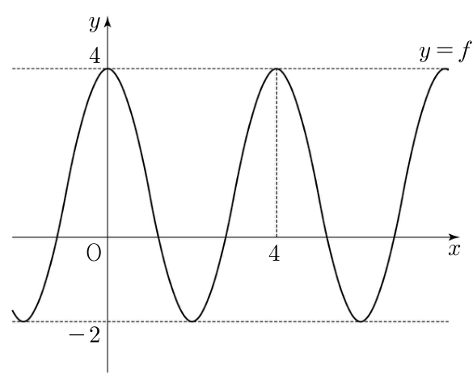
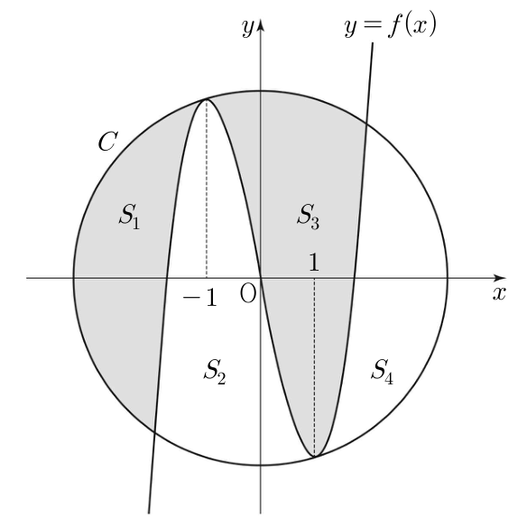

원본 (내부용)그림은 함수 \(f(x)=a\cos\frac{\pi}{2b}x+1\)의 그래프이다. 두 양수 \(a,b\)에 대하여 \(a+b\)의 값은? [3점]

① \(\frac72\)② \(4\)③ \(\frac92\)④ \(5\)⑤ \(\frac{11}{2}\)
원본 정답 ②
원본 풀이 (내부용)[출제의도] 삼각함수의 그래프 이해하기
주어진 그래프를 \(y\)축의 방향으로 \(-1\)만큼 평행이동하면 함수 \(y=a\cos\frac{\pi}{2b}x\)의 그래프와 일치한다.
함수 \(y=a\cos\frac{\pi}{2b}x\)의 최댓값이 3, 최솟값이 \(-3\)이므로 \(|a|=3\)
\(a>0\)이므로 \(a=3\)
주기가 4이므로
\(
\frac{2\pi}{\left|\frac{\pi}{2b}\right|}=4\text{에서 }|b|=1
\)
\(b>0\)이므로 \(b=1\)
따라서 \(a+b=4\)
생성기 숫자판 1/6 · G2f-18#0그림은 코사인함수의 그래프입니다. 주기는 $T=32$, 최댓값은 $M=6$, 최솟값은 $N=-4$입니다. 진폭을 양수 $a$, 주기의 사분의 일을 양수 $b$라 할 때 $a+b$의 값으로 옳은 것을 고르세요.
① $11$② $12$③ $13$④ $14$⑤ $15$
정답③ $13$ 그래프의 최댓값이 6, 최솟값이-4이므로 진폭은 $(6-(-4))/2=5$ 주기가 32이므로 주기의 사분의 일은 $32/4=8$ 따라서 $a+b=5+8=13$
숫자: 원본 2 1 → 쌍둥이 32 6 4
생성기 숫자판 2/6 · G2f-18#0그림은 코사인함수의 그래프입니다. 주기는 $T=16$, 최댓값은 $M=5$, 최솟값은 $N=-3$입니다. 진폭을 양수 $a$, 주기의 사분의 일을 양수 $b$라 할 때 $a+b$의 값으로 옳은 것을 고르세요.
① $6$② $7$③ $8$④ $9$⑤ $10$
정답③ $8$ 그래프의 최댓값이 5, 최솟값이-3이므로 진폭은 $(5-(-3))/2=4$ 주기가 16이므로 주기의 사분의 일은 $16/4=4$ 따라서 $a+b=4+4=8$
숫자: 원본 2 1 → 쌍둥이 16 5 3
생성기 숫자판 3/6 · G2f-18#0그림은 코사인함수의 그래프입니다. 주기는 $T=12$, 최댓값은 $M=11$, 최솟값은 $N=-9$입니다. 진폭을 양수 $a$, 주기의 사분의 일을 양수 $b$라 할 때 $a+b$의 값으로 옳은 것을 고르세요.
① $11$② $12$③ $13$④ $14$⑤ $15$
정답③ $13$ 그래프의 최댓값이 11, 최솟값이-9이므로 진폭은 $(11-(-9))/2=10$ 주기가 12이므로 주기의 사분의 일은 $12/4=3$ 따라서 $a+b=10+3=13$
숫자: 원본 2 1 → 쌍둥이 12 11 9
생성기 숫자판 4/6 · G2f-18#0그림은 코사인함수의 그래프입니다. 주기는 $T=12$, 최댓값은 $M=4$, 최솟값은 $N=-2$입니다. 진폭을 양수 $a$, 주기의 사분의 일을 양수 $b$라 할 때 $a+b$의 값으로 옳은 것을 고르세요.
① $4$② $5$③ $6$④ $7$⑤ $8$
정답③ $6$ 그래프의 최댓값이 4, 최솟값이-2이므로 진폭은 $(4-(-2))/2=3$ 주기가 12이므로 주기의 사분의 일은 $12/4=3$ 따라서 $a+b=3+3=6$
숫자: 원본 2 1 → 쌍둥이 12 4 2 · 같은 수: 2
생성기 숫자판 5/6 · G2f-18#0그림은 코사인함수의 그래프입니다. 주기는 $T=12$, 최댓값은 $M=8$, 최솟값은 $N=-6$입니다. 진폭을 양수 $a$, 주기의 사분의 일을 양수 $b$라 할 때 $a+b$의 값으로 옳은 것을 고르세요.
① $9$② $\frac{19}{2}$③ $10$④ $\frac{21}{2}$⑤ $11$
정답③ $10$ 그래프에서 최댓값이 $8$이고 $a>0$이므로 $a+1=8$, $a=7$ $x=0$에서 최대이고 다음 최대가 $x=12$이므로 주기는 $12$ $\frac{2\pi}{\frac{\pi}{2b}}=4b=12$이므로 $b=3$ 따라서 $a+b=7+3=10$
숫자: 원본 2 1 → 쌍둥이 12 8 6
생성기 숫자판 6/6 · G2f-18#0그림은 코사인함수의 그래프입니다. 주기는 $T=28$, 최댓값은 $M=4$, 최솟값은 $N=-2$입니다. 진폭을 양수 $a$, 주기의 사분의 일을 양수 $b$라 할 때 $a+b$의 값으로 옳은 것을 고르세요.
① $8$② $9$③ $10$④ $11$⑤ $12$
정답③ $10$ 그래프의 최댓값이 4, 최솟값이-2이므로 진폭은 $(4-(-2))/2=3$ 주기가 28이므로 주기의 사분의 일은 $28/4=7$ 따라서 $a+b=3+7=10$
숫자: 원본 2 1 → 쌍둥이 28 4 2 · 같은 수: 2
9. 2018년 11월 가형 9번 · 3점 · 수학Ⅰ 지수·로그 · G2M8-01#2
원본 (내부용)부등식 \(2-\log_{\frac12}(x-2)<\log_2(3x+4)\)를 만족시키는 정수 \(x\)의 개수는? [3점]
① \(6\)② \(7\)③ \(8\)④ \(9\)⑤ \(10\)
원본 정답 ④
원본 풀이 (내부용)[출제의도] 로그부등식 이해하기
진수조건에 의하여
\(
x-2>0,\quad 3x+4>0\text{이므로 }x>2\quad\cdots\quad㉠
\)
\(
\log_2 4+\log_2(x-2)<\log_2(3x+4)
\)
\(
\log_2 4(x-2)<\log_2(3x+4)
\)
\(
4x-8<3x+4
\)
\(
x<12\quad\cdots\quad㉡
\)
㉠, ㉡에 의하여 \(2<x<12\)
따라서 정수 \(x\)의 개수는 9
생성기 숫자판 1/6 · G2M8-01#2부등식 $2-\log_{\frac{1}{2}}\left(x-3\right)<\log_{2}\left(2x+5\right)$를 만족시키는 정수 $x$의 개수로 옳은 것을 고르세요.
① $5$② $6$③ $7$④ $8$⑤ $9$
정답① $5$ 진수 조건에서 $x>3$, $x>-\frac{5}{2}$이므로 $x>3$ $-\log_{\frac{1}{2}}\left(x-3\right)=\log_{2}\left(x-3\right)$, $2=\log_{2}4$이므로 주어진 부등식은 $\log_{2}4\left(x-3\right)<\log_{2}\left(2x+5\right)$ 밑 $2$가 $1$보다 크므로 $4\left(x-3\right)<2x+5$, $2x<17$, $x<\frac{17}{2}$ $3<x<\frac{17}{2}$을 만족시키는 정수 $x$는 $4$, $5$, $\cdots$, $8$이므로 그 개수는 $5$
원본 (내부용)수직선 위를 움직이는 점 P의 시각 \(t\ (t\ge0)\)에서의 속도 \(v(t)\)가 \( v(t)=t^2-2t-3 \) 이다. \(t=0\)부터 \(t=4\)까지 점 P가 움직인 거리는? [4점]
① \(\frac{26}{3}\)② \(\frac{28}{3}\)③ \(10\)④ \(\frac{32}{3}\)⑤ \(\frac{34}{3}\)
그림·참고 ---
원본 정답 ⑤
원본 풀이 (내부용)[출제의도] 정적분을 활용하여 문제해결하기
\(
v(t)=t^2-2t-3=(t+1)(t-3)
\)
\(t=0\)부터 \(t=4\)까지 점 P가 움직인 거리는
\(
\int_0^4|v(t)|dt
\)
\(
=\int_0^3(-t^2+2t+3)dt+\int_3^4(t^2-2t-3)dt
\)
\(
=\left[-\frac13t^3+t^2+3t\right]_0^3+
\left[\frac13t^3-t^2-3t\right]_3^4=\frac{34}{3}
\)
쌍둥이 1/5 · 4점 쌍둥이수직선 위를 움직이는 점 $\mathrm{P}$의 시각 $t(t\ge0)$에서의 속도 $v(t)=t^2-9t+14$입니다. $t=0$부터 $t=8$까지 점 $\mathrm{P}$가 움직인 거리를 구하세요.
① $\frac{100}{3}$② $\frac{106}{3}$③ $\frac{109}{3}$④ $\frac{112}{3}$⑤ $\frac{118}{3}$
정답③ $\frac{109}{3}$ 속도는 $0\le t<2$, $t>7$에서 양수이고 $2<t<7$에서 음수입니다. $F(t)=\frac{t^3}{3}-\frac{9t^2}{2}+14t$라 하면 이동 거리는 $|F(2)-F(0)|+|F(7)-F(2)|+|F(8)-F(7)|=\frac{38}{3}+\frac{125}{6}+\frac{17}{6}=\frac{109}{3}$입니다.
숫자: 원본 0 2 3 0 4 → 쌍둥이 0 9 14 0 8 · 같은 수: 0
쌍둥이 2/5 · 4점 쌍둥이수직선 위를 움직이는 점 $\mathrm{P}$의 시각 $t\left(t\ge 0\right)$에서의 속도 $v\left(t\right)$가 $v\left(t\right)=t^{2}-4t+3$입니다. $t=0$부터 $t=4$까지 점 $\mathrm{P}$가 움직인 거리로 옳은 것을 고르세요.
① $3$② $\frac{10}{3}$③ $\frac{11}{3}$④ $4$⑤ $\frac{13}{3}$
정답④ $4$ $v\left(t\right)=0$에서 $t=1$, $t=3$이고, 이 시각에서 $v\left(t\right)$의 부호가 바뀝니다. $\int_{0}^{1}v\left(t\right)dt=\left[\frac{t^{3}}{3}-2t^{2}+3t\right]_{0}^{1}=\frac{4}{3}$ $\int_{1}^{3}v\left(t\right)dt=\left[\frac{t^{3}}{3}-2t^{2}+3t\right]_{1}^{3}=-\frac{4}{3}$ $\int_{3}^{4}v\left(t\right)dt=\left[\frac{t^{3}}{3}-2t^{2}+3t\right]_{3}^{4}=\frac{4}{3}$ 움직인 거리는 $\int_{0}^{4}\left|v\left(t\right)\right|dt=\left|\int_{0}^{1}v\left(t\right)dt\right|+\left|\int_{1}^{3}v\left(t\right)dt\right|+\left|\int_{3}^{4}v\left(t\right)dt\right|$ $=\frac{4}{3}+\frac{4}{3}+\frac{4}{3}$ $=4$
숫자: 원본 0 2 3 0 4 → 쌍둥이 0 4 3 0 4 · 같은 수: 0 3 4
쌍둥이 3/5 · 4점 쌍둥이수직선 위를 움직이는 점 $\mathrm{P}$의 시각 $t\left(t\ge 0\right)$에서의 속도 $v\left(t\right)$가 $v\left(t\right)=t^{2}-t-2$입니다. $t=0$부터 $t=3$까지 점 $\mathrm{P}$가 움직인 거리로 옳은 것을 고르세요.
① $\frac{29}{6}$② $\frac{31}{6}$③ $\frac{11}{2}$④ $\frac{35}{6}$⑤ $\frac{37}{6}$
정답② $\frac{31}{6}$ $v\left(t\right)=0$에서 $t=2$이고, 이 시각에서 $v\left(t\right)$의 부호가 바뀝니다. $\int_{0}^{2}v\left(t\right)dt=\left[\frac{t^{3}}{3}-\frac{t^{2}}{2}-2t\right]_{0}^{2}=-\frac{10}{3}$ $\int_{2}^{3}v\left(t\right)dt=\left[\frac{t^{3}}{3}-\frac{t^{2}}{2}-2t\right]_{2}^{3}=\frac{11}{6}$ 움직인 거리는 $\int_{0}^{3}\left|v\left(t\right)\right|dt=\left|\int_{0}^{2}v\left(t\right)dt\right|+\left|\int_{2}^{3}v\left(t\right)dt\right|$ $=\frac{10}{3}+\frac{11}{6}$ $=\frac{31}{6}$
숫자: 원본 0 2 3 0 4 → 쌍둥이 0 2 0 3 · 같은 수: 0 2 3
쌍둥이 4/5 · 4점 쌍둥이수직선 위를 움직이는 점 $\mathrm{P}$의 시각 $t\left(t\ge 0\right)$에서의 속도 $v\left(t\right)$가 $v\left(t\right)=t^{2}-6t+5$입니다. $t=0$부터 $t=6$까지 점 $\mathrm{P}$가 움직인 거리로 옳은 것을 고르세요.
① $14$② $\frac{43}{3}$③ $\frac{44}{3}$④ $15$⑤ $\frac{46}{3}$
정답⑤ $\frac{46}{3}$ $v\left(t\right)=0$에서 $t=1$, $t=5$이고, 이 시각에서 $v\left(t\right)$의 부호가 바뀝니다. $\int_{0}^{1}v\left(t\right)dt=\left[\frac{t^{3}}{3}-3t^{2}+5t\right]_{0}^{1}=\frac{7}{3}$ $\int_{1}^{5}v\left(t\right)dt=\left[\frac{t^{3}}{3}-3t^{2}+5t\right]_{1}^{5}=-\frac{32}{3}$ $\int_{5}^{6}v\left(t\right)dt=\left[\frac{t^{3}}{3}-3t^{2}+5t\right]_{5}^{6}=\frac{7}{3}$ 움직인 거리는 $\int_{0}^{6}\left|v\left(t\right)\right|dt=\left|\int_{0}^{1}v\left(t\right)dt\right|+\left|\int_{1}^{5}v\left(t\right)dt\right|+\left|\int_{5}^{6}v\left(t\right)dt\right|$ $=\frac{7}{3}+\frac{32}{3}+\frac{7}{3}$ $=\frac{46}{3}$
숫자: 원본 0 2 3 0 4 → 쌍둥이 0 6 5 0 6 · 같은 수: 0
쌍둥이 5/5 · 4점 쌍둥이수직선 위를 움직이는 점 $\mathrm{P}$의 시각 $t(t\ge0)$에서의 속도 $v(t)=t^2-11t+24$입니다. $t=0$부터 $t=10$까지 점 $\mathrm{P}$가 움직인 거리를 구하세요.
① $59$② $62$③ $65$④ $68$⑤ $71$
정답③ $65$ $v(t)=(t-3)(t-8)$이므로 $0\le t<3$, $t>8$에서 양수이고 $3<t<8$에서 음수입니다. 원시함수를 $F(t)=\frac{t^3}{3}-\frac{11t^2}{2}+24t$라 하면, $F(3)=\frac{63}{2}$, $F(8)=\frac{32}{3}$, $F(10)=\frac{70}{3}$입니다. 이동 거리는 $|F(3)-F(0)|+|F(8)-F(3)|+|F(10)-F(8)|=\frac{63}{2}+\frac{125}{6}+\frac{38}{3}=65$입니다.
숫자: 원본 0 2 3 0 4 → 쌍둥이 0 11 24 0 10 · 같은 수: 0
15. 2018년 11월 가형 15번 · 4점 · 수학Ⅰ 지수·로그 · 4점 쌍둥이
원본 (내부용)함수 \(y=\log_3 x\)의 그래프 위에 두 점 \(A(a,1), B(27,b)\)가 있다. 함수 \(y=\log_3 x\)의 그래프를 \(x\)축의 방향으로 \(m\)만큼 평행이동한 그래프가 두 점 \(A,B\)의 중점을 지날 때, 상수 \(m\)의 값은? [4점]
① \(6\)② \(7\)③ \(8\)④ \(9\)⑤ \(10\)
원본 정답 ①
원본 풀이 (내부용)[출제의도] 로그함수의 그래프 이해하기
\(
\log_3a=1,\quad\log_327=b\text{이므로 }a=3,\ b=3
\)
함수 \(y=\log_3x\)의 그래프를 \(x\)축의 방향으로 \(m\)만큼 평행이동한 함수 \(y=\log_3(x-m)\)의 그래프가 두 점 A, B의 중점의 좌표 \((15,2)\)를 지나므로
\(
\log_3(15-m)=2
\)
따라서 \(m=6\)
쌍둥이 1/5 · 4점 쌍둥이함수 $y=\log_3x$ 위의 두 점 $\mathrm{A}(a,1)$, $\mathrm{B}(27,b)$의 중점을 $\mathrm{M}$이라 할 때, 점 $\mathrm{M}$의 $x$좌표를 구하세요.
쌍둥이 2/5 · 4점 쌍둥이함수 $y=\log_{2}x$의 그래프 위에 두 점 $\mathrm{A}\left(a,\ 1\right)$, $\mathrm{B}\left(32,\ b\right)$가 있습니다. 함수 $y=\log_{2}x$의 그래프를 $x$축의 방향으로 $m$만큼 평행이동한 그래프가 두 점 $\mathrm{A}$, $\mathrm{B}$의 중점을 지날 때, 상수 $m$의 값으로 옳은 것을 고르세요.
① $8$② $9$③ $10$④ $11$⑤ $12$
정답② $9$ $\log_{2}a=1$에서 $a=2$, $b=\log_{2}32=5$ 중점은 $\left(\frac{2+32}{2},\ \frac{1+5}{2}\right)=\left(17,\ 3\right)$ 평행이동한 그래프 $y=\log_{2}\left(x-m\right)$이 이 점을 지나므로 $\log_{2}\left(17-m\right)=3$ $17-m=2^{3}=8$이므로 $m=9$
숫자: 원본 3 1 27 3 → 쌍둥이 2 1 32 2 · 같은 수: 1
쌍둥이 3/5 · 4점 쌍둥이함수 $y=\log_{3}x$의 그래프 위에 두 점 $\mathrm{A}\left(a,\ 2\right)$, $\mathrm{B}\left(81,\ b\right)$가 있습니다. 함수 $y=\log_{3}x$의 그래프를 $x$축의 방향으로 $m$만큼 평행이동한 그래프가 두 점 $\mathrm{A}$, $\mathrm{B}$의 중점을 지날 때, 상수 $m$의 값으로 옳은 것을 고르세요.
① $14$② $15$③ $16$④ $17$⑤ $18$
정답⑤ $18$ $\log_{3}a=2$에서 $a=9$, $b=\log_{3}81=4$ 중점은 $\left(\frac{9+81}{2},\ \frac{2+4}{2}\right)=\left(45,\ 3\right)$ 평행이동한 그래프 $y=\log_{3}\left(x-m\right)$이 이 점을 지나므로 $\log_{3}\left(45-m\right)=3$ $45-m=3^{3}=27$이므로 $m=18$
숫자: 원본 3 1 27 3 → 쌍둥이 3 2 81 3 · 같은 수: 3
쌍둥이 4/5 · 4점 쌍둥이함수 $y=\log_{2}x$의 그래프 위에 두 점 $\mathrm{A}\left(a,\ 2\right)$, $\mathrm{B}\left(16,\ b\right)$가 있습니다. 함수 $y=\log_{2}x$의 그래프를 $x$축의 방향으로 $m$만큼 평행이동한 그래프가 두 점 $\mathrm{A}$, $\mathrm{B}$의 중점을 지날 때, 상수 $m$의 값으로 옳은 것을 고르세요.
① $2$② $3$③ $4$④ $5$⑤ $6$
정답① $2$ $\log_{2}a=2$에서 $a=4$, $b=\log_{2}16=4$ 중점은 $\left(\frac{4+16}{2},\ \frac{2+4}{2}\right)=\left(10,\ 3\right)$ 평행이동한 그래프 $y=\log_{2}\left(x-m\right)$이 이 점을 지나므로 $\log_{2}\left(10-m\right)=3$ $10-m=2^{3}=8$이므로 $m=2$
숫자: 원본 3 1 27 3 → 쌍둥이 2 2 16 2
쌍둥이 5/5 · 4점 쌍둥이함수 $y=\log_2x$ 위의 두 점 $\mathrm{A}(a,2)$, $\mathrm{B}(8,b)$의 중점을 $\mathrm{M}$이라 할 때, 점 $\mathrm{M}$의 $y$좌표를 구하세요.
① $2$② $\frac{9}{4}$③ $\frac{5}{2}$④ $\frac{11}{4}$⑤ $3$
원본 (내부용)\(0\le x\le\pi\)일 때, 방정식 \( 2\cos^2x+(2+\sqrt3)\sin x-(2+\sqrt3)=0 \) 의 모든 해의 합은? [4점]
① \(\frac34\pi\)② \(\pi\)③ \(\frac54\pi\)④ \(\frac32\pi\)⑤ \(\frac74\pi\)
그림·참고 ---
원본 정답 ④
원본 풀이 (내부용)[출제의도] 삼각함수의 그래프 이해하기
\(
\cos^2x=1-\sin^2x\text{이므로}
\)
\(
2(1-\sin^2x)+(2+\sqrt3)\sin x-(2+\sqrt3)=0
\)
\(
2\sin^2x-(2+\sqrt3)\sin x+\sqrt3=0
\)
\(
(2\sin x-\sqrt3)(\sin x-1)=0
\)
\(
\sin x=\frac{\sqrt3}{2}\quad\text{또는}\quad\sin x=1\text{이므로}
\)
\(0\le x\le\pi\)에서
\(
x=\frac\pi3\quad\text{또는}\quad x=\frac{2\pi}3\quad\text{또는}\quad x=\frac\pi2
\)
따라서 모든 해의 합은 \(\frac32\pi\)
쌍둥이 1/5 · 4점 쌍둥이$0\le x\le\pi$에서 방정식 $3\cos^2x+4\sin x-4=0$의 모든 해 $x$에 대하여 $\sin x$의 곱을 구하세요.
① $\frac1{27}$② $\frac1{18}$③ $\frac19$④ $\frac16$⑤ $\frac13$
정답③ $\frac19$ $s=\sin x$라 하면 $3(1-s^2)+4s-4=0$, 즉 $(3s-1)(s-1)=0$ $\sin x=1$인 해는 하나이고 $\sin x=\frac13$인 해는 두 개이다. 따라서 곱은 $1\cdot\frac13\cdot\frac13=\frac19$
숫자: 원본 0 2 2 3 2 3 0 → 쌍둥이 0 3 4 4 0 · 같은 수: 0 3
쌍둥이 2/5 · 4점 쌍둥이$0\le x\le \pi$일 때, 방정식 $2\cos^{2}x+\left(\sqrt{2}+2\right)\sin x-\left(\sqrt{2}+2\right)=0$의 모든 해의 합으로 옳은 것을 고르세요.
① $\pi$② $\frac{5}{4}\pi$③ $\frac{3}{2}\pi$④ $\frac{7}{4}\pi$⑤ $2\pi$
정답③ $\frac{3}{2}\pi$ $\cos^{2}x=1-\sin^{2}x$이므로 $2\sin^{2}x-\left(\sqrt{2}+2\right)\sin x+\sqrt{2}=0$ $\left(2\sin x-\sqrt{2}\right)\left(\sin x-1\right)=0$에서 $\sin x=\frac{\sqrt{2}}{2}$ 또는 $\sin x=1$ $0\le x\le \pi$에서 해는 $\frac{\pi}{4}$, $\frac{\pi}{2}$, $\frac{3}{4}\pi$ 모든 해의 합은 $\frac{3}{2}\pi$
원본 (내부용)최고차항의 계수가 양수인 사차함수 \(f(x)\)의 도함수 \(f'(x)\)에 대하여 방정식 \(f'(x)=0\)이 세 실근 \(\alpha,0,\beta\ (\alpha<0<\beta)\)를 갖는다. \( S=\int_{\alpha}^{0}|f'(x)|\,dx,\qquad T=\int_{0}^{\beta}|f'(x)|\,dx \) 라 할 때, <보기>에서 옳은 것만을 있는 대로 고른 것은? [4점] ㄱ. 함수 \(f(x)\)는 \(x=0\)에서 극댓값을 갖는다. ㄴ. \(\alpha+\beta=0\)이면 \(S=T\)이다. ㄷ. \(S<T\)이고 \(f(\alpha)=0\)이면 방정식 \(f(x)=0\)의 양의 실근의 개수는 2이다.
① ㄱ② ㄷ③ ㄱ, ㄴ④ ㄴ, ㄷ⑤ ㄱ, ㄴ, ㄷ
원본 정답 ⑤
원본 풀이 (내부용)[출제의도] 정적분을 활용하여 추론하기
ㄱ. \(f'(x)\)의 최고차항의 계수가 양수이므로 함수 \(y=f'(x)\)의 그래프는 그림과 같다.
\(
f'(0)=0\text{이고 }x=0\text{의 좌우에서 }f'(x)\text{의 부호가 양에서 음으로 바뀌므로 함수 }f(x)\text{는 }x=0\text{에서 극댓값을 갖는다. (참)}
\)
ㄴ. \(\alpha=-\beta\)에 의하여
\(
f'(x)=k(x-\beta)x(x+\beta)=kx^3-k\beta^2x\quad(k>0)
\)
\(
f(x)=\frac k4x^4-\frac{k\beta^2}{2}x^2+C\quad(\text{단, }C\text{는 적분상수})
\)
따라서 \(f(x)\)는 \(y\)축에 대하여 대칭인 함수이므로
\(
f(-\beta)=f(\beta)
\)
\(
S=\int_\alpha^0|f'(x)|dx=-\int_\alpha^0f'(x)dx=f(0)-f(\alpha)
\)
\(
T=\int_0^\beta|f'(x)|dx=\int_0^\beta\{-f'(x)\}dx=-f(\beta)+f(0)
\)
따라서 \(S=T\) (참)
ㄷ. \(S<T\), \(f(\alpha)=0\)이므로
\(
f(0)-f(\alpha)<-f(\beta)+f(0)\text{에서 }f(\beta)<0
\)
함수 \(f(x)\)는 \(x=\alpha,\ x=\beta\)에서 극솟값, \(x=0\)에서 극댓값을 갖는다.
\(y=f(x)\)의 그래프의 개형은 그림과 같다.
따라서 옳은 것은 ㄱ, ㄴ, ㄷ
#### 원본 PDF 페이지 번호: 1
쌍둥이 1/5 · 4점 쌍둥이최고차항의 계수가 양수인 사차함수 $f(x)$의 도함수를 $f'(x)=2(x-\alpha)(x-2)(x-\beta)$로 둔다. $\alpha<0<2<\beta$라 하자. $S=\int_{\alpha}^{2}|f'(x)|\,dx$, $T=\int_{2}^{\beta}|f'(x)|\,dx$라 할 때, <보기>에서 옳지 않은 것만을 있는 대로 고른 것은? [4점]
<보기>
ㄱ. 함수 $f(x)$는 $x=2$에서 극댓값을 갖는다.
ㄴ. $\alpha+\beta=0$이면 $S=T$이다.
ㄷ. $S<T$이고 $f(\alpha)=0$이면 방정식 $f(x)=0$의 양의 실근의 개수는 2이다.
① ① ㄱ② ② ㄴ③ ③ ㄷ④ ④ ㄱ, ㄴ⑤ ⑤ ㄱ, ㄷ
정답② ② ㄴ 부호는 $(-,+,-,+)$ 순서이므로 $x=2$에서 극댓값을 갖는다. ㄴ은 거짓이다. $\alpha=-3,\beta=3$을 대입하면 $\alpha+\beta=0$이지만 $L=5,R=1$이고 $S-T=144\ne0$이다. ㄷ의 전제에서 $f(\alpha)=0$, $S=f(2)-f(\alpha)$, $T=f(2)-f(\beta)$이므로 $S<T$이면 $f(\beta)<0$. $\alpha<0<2$이고 $f$는 $(\alpha,2)$에서 증가하므로 $f(0)>0$. 따라서 $(2,\beta)$에서 한 번, $(\beta,\infty)$에서 한 번 근을 가져 양의 근은 정확히 2개이다.
쌍둥이 2/5 · 4점 쌍둥이최고차항의 계수가 양수인 사차함수 $f(x)$의 도함수를 $f'(x)=3(x-\alpha)(x-3)(x-\beta)$로 둔다. $\alpha<0<3<\beta$라 하자. $S=\int_{\alpha}^{3}|f'(x)|\,dx$, $T=\int_{3}^{\beta}|f'(x)|\,dx$라 할 때, <보기>에서 옳지 않은 것만을 있는 대로 고른 것은? [4점]
<보기>
ㄱ. 함수 $f(x)$는 $x=0$에서 극댓값을 갖는다.
ㄴ. $\alpha+\beta=6$이면 $S=T$이다.
ㄷ. $S<T$이고 $f(\alpha)=0$이면 방정식 $f(x)=0$의 양의 실근의 개수는 2이다.
① ① ㄱ② ② ㄴ③ ③ ㄷ④ ④ ㄱ, ㄴ⑤ ⑤ ㄱ, ㄷ
정답① ① ㄱ $0$은 $\alpha$와 극댓값 위치 사이에서 $f'(0)>0$인 내부점이므로 극값이 아니다. $L=3-\alpha$, $R=\beta-3$으로 두면 $\alpha+\beta=6$일 때 $L=R$이다. $S-T=\frac{3(L-R)(L+R)^3}{12}=0$이므로 ㄴ은 참이다. ㄷ의 전제에서 $f(\alpha)=0$, $S=f(3)-f(\alpha)$, $T=f(3)-f(\beta)$이므로 $S<T$이면 $f(\beta)<0$. $\alpha<0<3$이고 $f$는 $(\alpha,3)$에서 증가하므로 $f(0)>0$. 따라서 $(3,\beta)$에서 한 번, $(\beta,\infty)$에서 한 번 근을 가져 양의 근은 정확히 2개이다.
쌍둥이 3/5 · 4점 쌍둥이최고차항의 계수가 양수인 사차함수 $f(x)$의 도함수를 $f'(x)=5(x-\alpha)(x-4)(x-\beta)$로 둔다. $\alpha<0<4<\beta$라 하자. $S=\int_{\alpha}^{4}|f'(x)|\,dx$, $T=\int_{4}^{\beta}|f'(x)|\,dx$라 할 때, <보기>에서 옳지 않은 것만을 있는 대로 고른 것은? [4점]
<보기>
ㄱ. 함수 $f(x)$는 $x=4$에서 극댓값을 갖는다.
ㄴ. $\alpha+\beta=8$이면 $S=T$이다.
ㄷ. $S<T$이고 $f(\alpha)=0$이면 방정식 $f(x)=0$의 양의 실근의 개수는 1이다.
① ① ㄱ② ② ㄴ③ ③ ㄷ④ ④ ㄱ, ㄴ⑤ ⑤ ㄱ, ㄷ
정답③ ③ ㄷ 부호는 $(-,+,-,+)$ 순서이므로 $x=4$에서 극댓값을 갖는다. $L=4-\alpha$, $R=\beta-4$로 두면 $\alpha+\beta=8$일 때 $L=R$이다. $S-T=\frac{5(L-R)(L+R)^3}{12}=0$이므로 ㄴ은 참이다. ㄷ은 거짓이다. 앞의 전제 아래 양의 실근은 두 구간에서 각각 하나씩 생겨 총 2개이다.
쌍둥이 4/5 · 4점 쌍둥이최고차항의 계수가 양수인 사차함수 $f(x)$의 도함수를 $f'(x)=6(x-\alpha)(x-5)(x-\beta)$로 둔다. $\alpha<0<5<\beta$라 하자. $S=\int_{\alpha}^{5}|f'(x)|\,dx$, $T=\int_{5}^{\beta}|f'(x)|\,dx$라 할 때, <보기>에서 옳은 것만을 있는 대로 고른 것은? [4점]
<보기>
ㄱ. 함수 $f(x)$는 $x=5$에서 극댓값을 갖는다.
ㄴ. $\alpha+\beta=10$이면 $S=T$이다.
ㄷ. $S<T$이고 $f(\alpha)=0$이면 방정식 $f(x)=0$의 양의 실근의 개수는 2이다.
① ① ㄱ② ② ㄴ③ ③ ㄱ, ㄴ④ ④ ㄱ, ㄷ⑤ ⑤ ㄱ, ㄴ, ㄷ
정답⑤ ⑤ ㄱ, ㄴ, ㄷ $f\prime(x)$의 부호는 근 $\alpha,5,\beta$를 지날 때 $-,+,-,+$로 바뀌므로 $x=5$에서 극댓값을 갖는다. ㄱ은 참이다. $L=5-\alpha$, $R=\beta-5$라 두면 $S-T=\frac{6(L-R)(L+R)^3}{12}$이다. $\alpha+\beta=10$이면 $L=R$이므로 $S=T$이고 ㄴ은 참이다. $f(\alpha)=0$이고 $f$는 $(\alpha,5)$에서 증가하므로 $f(0)>0$ 및 $f(5)>0$이다. $S<T$이면 $f(5)-f(\alpha)<f(5)-f(\beta)$이므로 $f(\beta)<0$. 따라서 $(5,\beta)$에서 한 양의 근, $(\beta,\infty)$에서 한 양의 근이 생기며 다른 양의 근은 없다. ㄷ은 참이다.
쌍둥이 5/5 · 4점 쌍둥이최고차항의 계수가 양수인 사차함수 $f(x)$의 도함수를 $f'(x)=7(x-\alpha)(x-6)(x-\beta)$로 둔다. $\alpha<0<6<\beta$라 하자. $S=\int_{\alpha}^{6}|f'(x)|\,dx$, $T=\int_{6}^{\beta}|f'(x)|\,dx$라 할 때, <보기>에서 옳은 것만을 있는 대로 고른 것은? [4점]
<보기>
ㄱ. 함수 $f(x)$는 $x=6$에서 극댓값을 갖는다.
ㄴ. $\alpha+\beta=12$이면 $S=T$이다.
ㄷ. $S<T$이고 $f(\alpha)=0$이면 방정식 $f(x)=0$의 양의 실근의 개수는 2이다.
① ① ㄱ② ② ㄴ③ ③ ㄱ, ㄴ④ ④ ㄱ, ㄷ⑤ ⑤ ㄱ, ㄴ, ㄷ
정답⑤ ⑤ ㄱ, ㄴ, ㄷ $f\prime(x)$의 부호는 근 $\alpha,6,\beta$를 지날 때 $-,+,-,+$로 바뀌므로 $x=6$에서 극댓값을 갖는다. ㄱ은 참이다. $L=6-\alpha$, $R=\beta-6$라 두면 $S-T=\frac{7(L-R)(L+R)^3}{12}$이다. $\alpha+\beta=12$이면 $L=R$이므로 $S=T$이고 ㄴ은 참이다. $f(\alpha)=0$이고 $f$는 $(\alpha,6)$에서 증가하므로 $f(0)>0$ 및 $f(6)>0$이다. $S<T$이면 $f(6)-f(\alpha)<f(6)-f(\beta)$이므로 $f(\beta)<0$. 따라서 $(6,\beta)$에서 한 양의 근, $(\beta,\infty)$에서 한 양의 근이 생기며 다른 양의 근은 없다. ㄷ은 참이다.
원본 (내부용)그림과 같이 곡선 \(y=x^2\) 위의 점 \(P(t,t^2)\ (0<t<1)\)에서의 접선 \(l\)이 \(x\)축과 만나는 점을 \(Q\), 점 \(P\)에서 \(x\)축에 내린 수선의 발을 \(R\)라 할 때, 삼각형 \(PQR\)의 넓이를 \(f(t)\)라 하자. 또한, 점 P를 지나고 기울기가 \(-1\)인 직선 \(m\)이 곡선 \(y=\sqrt{x}\)와 만나는 점을 A라 할 때, 선분 PA를 대각선으로 하는 정사각형 PCAB의 넓이를 \(g(t)\)라 하자. \( \lim_{t\to0^+}\frac{t\times g(t)}{f(t)} \) 의 값은? [4점]
① \(1\)② \(2\)③ \(3\)④ \(4\)⑤ \(5\)
그림·참고 ---
원본 정답 ④
원본 풀이 (내부용)[출제의도] 함수의 극한을 활용하여 문제해결하기
\(R(t,0)\)이고, 점 \(P(t,t^2)\)에서의 접선 \(l\)의 방정식은
\(
y=2t(x-t)+t^2=2tx-t^2
\)
\(x\)절편은 \(\frac t2\)이므로 \(Q\left(\frac t2,0\right)\)
\(
\overline{QR}=\frac t2,\quad\overline{PR}=t^2
\)
따라서 삼각형 PQR의 넓이
\(
f(t)=\frac12\times\overline{QR}\times\overline{PR}
=\frac12\times\frac t2\times t^2=\frac14t^3
\)
\(x>0\)일 때, 두 곡선 \(y=x^2,\ y=\sqrt{x}\)는 직선 \(y=x\)에 대하여 대칭이다.
두 점 P와 A는 각각 두 곡선 위의 점이고, 기울기가 \(-1\)인 직선 위에 있으므로 직선 \(y=x\)에 대하여 대칭이다.
따라서 \(A(t^2,t)\)
한 변의 길이가 \(t-t^2\)인 정사각형 PCAB의 넓이
\(
g(t)=(t-t^2)^2=t^2-2t^3+t^4
\)
따라서
\(
\lim_{t\to0^+}\frac{t\times g(t)}{f(t)}
=\lim_{t\to0^+}\frac{t(t^4-2t^3+t^2)}{\frac14t^3}=4
\)
쌍둥이 1/5 · 4점 쌍둥이곡선 $y=2x^{2}$ 위의 점 $\mathrm{P}\left(t,\ 2t^{2}\right)\ (0<t<\frac{1}{2})$에서의 접선 $l$이 $x$축과 만나는 점을 $\mathrm{Q}$, 점 $\mathrm{P}$에서 $x$축에 내린 수선의 발을 $\mathrm{R}$라 할 때, 삼각형 $\mathrm{PQR}$의 넓이를 $f(t)$라 합니다. 또한 점 $\mathrm{P}$를 지나고 기울기가 $-1$인 직선 $m$이 곡선 $y=\sqrt{\frac{x}{2}}$와 만나는 점을 $\mathrm{A}$라 할 때, 선분 $\mathrm{PA}$를 대각선으로 하는 정사각형 $\mathrm{PCAB}$의 넓이를 $g(t)$라 합니다. $\lim_{t\to0+}\frac{t\times g(t)}{f(t)}$의 값으로 옳은 것을 고르세요.
① $2$② $3$③ $4$④ $5$⑤ $6$
정답① $2$ 접선의 기울기는 $4t$이고 $x$절편은 $\frac{t}{2}$이므로 $\overline{\mathrm{QR}}=\frac{t}{2}$, $f(t)=\frac{1}{2}\times\frac{t}{2}\times2t^{2}=\frac{1}{2}t^{3}$ 두 곡선 $y=2x^{2}$, $y=\sqrt{\frac{x}{2}}$는 직선 $y=x$에 대하여 대칭이고 직선 $m$은 $y=x$에 수직이므로 $\mathrm{A}$는 $\mathrm{P}$의 대칭점 $\left(2t^{2},\ t\right)$ $\overline{\mathrm{PA}}^{2}=2\left(t-2t^{2}\right)^{2}$이므로 $g(t)=\frac{1}{2}\overline{\mathrm{PA}}^{2}=\left(t-2t^{2}\right)^{2}$ $\frac{t\times g(t)}{f(t)}=2\left(1-2t\right)^{2}\to2$
숫자: 원본 0 1 1 0 → 쌍둥이 2 2 0 1 2 1 2 0 · 같은 수: 0 1
쌍둥이 2/5 · 4점 쌍둥이곡선 $y=\frac{x^{2}}{2}$ 위의 점 $\mathrm{P}\left(t,\ \frac{t^{2}}{2}\right)\ (0<t<2)$에서의 접선 $l$이 $x$축과 만나는 점을 $\mathrm{Q}$, 점 $\mathrm{P}$에서 $x$축에 내린 수선의 발을 $\mathrm{R}$라 할 때, 삼각형 $\mathrm{PQR}$의 넓이를 $f(t)$라 합니다. 또한 점 $\mathrm{P}$를 지나고 기울기가 $-1$인 직선 $m$이 곡선 $y=\sqrt{2x}$와 만나는 점을 $\mathrm{A}$라 할 때, 선분 $\mathrm{PA}$를 대각선으로 하는 정사각형 $\mathrm{PCAB}$의 넓이를 $g(t)$라 합니다. $\lim_{t\to0+}\frac{t\times g(t)}{f(t)}$의 값으로 옳은 것을 고르세요.
① $5$② $6$③ $7$④ $8$⑤ $9$
정답④ $8$ 접선의 기울기는 $t$이고 $x$절편은 $\frac{t}{2}$이므로 $\overline{\mathrm{QR}}=\frac{t}{2}$, $f(t)=\frac{1}{2}\times\frac{t}{2}\times\frac{1}{2}t^{2}=\frac{1}{8}t^{3}$ 두 곡선 $y=\frac{x^{2}}{2}$, $y=\sqrt{2x}$는 직선 $y=x$에 대하여 대칭이고 직선 $m$은 $y=x$에 수직이므로 $\mathrm{A}$는 $\mathrm{P}$의 대칭점 $\left(\frac{1}{2}t^{2},\ t\right)$ $\overline{\mathrm{PA}}^{2}=2\left(t-\frac{1}{2}t^{2}\right)^{2}$이므로 $g(t)=\frac{1}{2}\overline{\mathrm{PA}}^{2}=\left(t-\frac{1}{2}t^{2}\right)^{2}$ $\frac{t\times g(t)}{f(t)}=8\left(1-\frac{1}{2}t\right)^{2}\to8$
숫자: 원본 0 1 1 0 → 쌍둥이 2 2 0 2 1 2 0 · 같은 수: 0 1
쌍둥이 3/5 · 4점 쌍둥이곡선 $y=\frac{x^{2}}{3}$ 위의 점 $\mathrm{P}\left(t,\ \frac{t^{2}}{3}\right)\ (0<t<3)$에서의 접선 $l$이 $x$축과 만나는 점을 $\mathrm{Q}$, 점 $\mathrm{P}$에서 $x$축에 내린 수선의 발을 $\mathrm{R}$라 할 때, 삼각형 $\mathrm{PQR}$의 넓이를 $f(t)$라 합니다. 또한 점 $\mathrm{P}$를 지나고 기울기가 $-1$인 직선 $m$이 곡선 $y=\sqrt{3x}$와 만나는 점을 $\mathrm{A}$라 할 때, 선분 $\mathrm{PA}$를 대각선으로 하는 정사각형 $\mathrm{PCAB}$의 넓이를 $g(t)$라 합니다. $\lim_{t\to0+}\frac{t\times g(t)}{f(t)}$의 값으로 옳은 것을 고르세요.
① $8$② $9$③ $10$④ $11$⑤ $12$
정답⑤ $12$ 접선의 기울기는 $\frac{2}{3}t$이고 $x$절편은 $\frac{t}{2}$이므로 $\overline{\mathrm{QR}}=\frac{t}{2}$, $f(t)=\frac{1}{2}\times\frac{t}{2}\times\frac{1}{3}t^{2}=\frac{1}{12}t^{3}$ 두 곡선 $y=\frac{x^{2}}{3}$, $y=\sqrt{3x}$는 직선 $y=x$에 대하여 대칭이고 직선 $m$은 $y=x$에 수직이므로 $\mathrm{A}$는 $\mathrm{P}$의 대칭점 $\left(\frac{1}{3}t^{2},\ t\right)$ $\overline{\mathrm{PA}}^{2}=2\left(t-\frac{1}{3}t^{2}\right)^{2}$이므로 $g(t)=\frac{1}{2}\overline{\mathrm{PA}}^{2}=\left(t-\frac{1}{3}t^{2}\right)^{2}$ $\frac{t\times g(t)}{f(t)}=12\left(1-\frac{1}{3}t\right)^{2}\to12$
숫자: 원본 0 1 1 0 → 쌍둥이 3 3 0 3 1 3 0 · 같은 수: 0 1
쌍둥이 4/5 · 4점 쌍둥이곡선 $y=\frac{x^2}{3}$ 위의 점 $P(t,t^2/3)$ ($0<t<3$)에서의 접선이 $x$축과 만나는 점을 $Q$, $P$에서 $x$축에 내린 수선의 발을 $R$라 하고 $[PQR]=f(t)$라 합니다. $P$를 지나고 기울기가 $-1$인 직선이 $y=\sqrt{3x}$와 만나는 점을 $A$라 하고, 대각선이 $PA$인 정사각형의 넓이를 $g(t)$라 합니다. $\lim_{t\to0+}t g(t)/f(t)$를 구하세요.
쌍둥이 5/5 · 4점 쌍둥이곡선 $y=4x^2$ 위의 점 $P(t,4t^2)$ ($0<t<1/4$)에서의 접선이 $x$축과 만나는 점을 $Q$, $P$에서 $x$축에 내린 수선의 발을 $R$라 하고 $[PQR]=f(t)$라 합니다. $P$를 지나고 기울기가 $-1$인 직선이 $y=\sqrt{x/4}$와 만나는 점을 $A$라 하고, 대각선이 $PA$인 정사각형의 넓이를 $g(t)$라 합니다. $\lim_{t\to0+}t g(t)/f(t)$를 구하세요.
원본 (내부용)양수 \(k\)에 대하여 함수 \( f(x)=2kx^3-3(3k+1)x^2+18x-2 \) 가 닫힌 구간 \([0,3]\)에서 최댓값 \(12\)를 가질 때, \(k\)의 값을 구하는 과정이다. 함수 \(f(x)\)에서 \( f'(x)=6kx^2-6(3k+1)x+18=6(kx-1)(x-3) \) \( k=\boxed{(\text{가})} \) 인 경우를 제외하고 함수 \(f(x)\)는 실수 전체의 집합에서 극댓값과 극솟값을 모두 가지므로 \( \text{(i) }0<k\le\boxed{(\text{가})}\text{일 때,} \) \( 0<x<3\text{에서 }f'(x)>0\text{이므로 함수 }f(x)\text{는 증가한다.} \) 따라서 닫힌 구간 \([0,3]\)에서 함수 \(f(x)\)의 최댓값은 \(\boxed{(\text{나})}\text{이다. 그러나 }\boxed{(\text{나})}=12\text{를 만족하는 }k\text{의 값은 }0<k\le\boxed{(\text{가})}\text{에 존재하지 않는다.} \) \( \text{(ii) }k>\boxed{(\text{가})}\text{일 때,} \) 닫힌 구간 \([0,3]\)에서 함수 \(f(x)\)의 증가와 감소를 표로 나타내면 다음과 같다. | \(x\) | \(0\) | \(\cdots\) | \(\frac1k\) | \(\cdots\) | \(3\) | |---|---:|:---:|---:|:---:|---:| | \(f'(x)\) | \(+\) | \(+\) | \(0\) | \(-\) | \(0\) | | \(f(x)\) | | \(\nearrow\) | 극대 | \(\searrow\) | | 따라서 함수 \(f(x)\)는 \(x=\frac1k\)에서 극대이면서 최대이다. \( \text{(i), (ii)에 의하여 함수 }f(x)\text{가 닫힌 구간 }[0,3]\text{에서 최댓값 }12\text{를 가질 때, }k=\boxed{(\text{다})}\text{이다.} \) 위의 (가), (다)에 알맞은 수를 각각 \(a,b\)라 하고, (나)에 알맞은 식을 \(g(k)\)라 할 때, \( \frac{g(a)}b \) 의 값은? [4점]
① \(24\)② \(26\)③ \(28\)④ \(30\)⑤ \(32\)
원본 정답 ⑤
원본 풀이 (내부용)[출제의도] 다항함수의 성질을 활용하여 추론하기
함수 \(f(x)\)에서
\(
f'(x)=6kx^2-6(3k+1)x+18
\)
\(
=6(kx-1)(x-3)
\)
\(
=6k\left(x-\frac1k\right)(x-3)
\)
\(\frac1k=3\)인 경우 \(f'(x)=2(x-3)^2\ge0\)이므로 함수 \(f(x)\)는 실수 전체의 집합에서 증가한다. 따라서 \(k=\frac13\)인 경우를 제외하고 함수 \(f(x)\)는 실수 전체의 집합에서 극댓값과 극솟값을 모두 가지므로
(i) \(0<k\le\frac13\)일 때,
\(0<x<3\)에서 \(f'(x)>0\)이므로 함수 \(f(x)\)는 증가한다. 따라서 닫힌 구간 \([0,3]\)에서 함수 \(f(x)\)의 최댓값이 \(f(3)=-27k+25\)이다. 그러나
\(
-27k+25=12\text{를 만족하는 }k=\frac{13}{27}\text{이므로}
\)
\(
0<k\le\frac13\text{에 존재하지 않는다.}
\)
(ii) \(k>\frac13\)일 때,
닫힌 구간 \([0,3]\)에서 함수 \(f(x)\)의 증가와 감소를 표로 나타내면 다음과 같다.
| \(x\) | 0 | \(\cdots\) | \(\frac1k\) | \(\cdots\) | 3 |
|---|---|---|---|---|---|
| \(f'(x)\) | \(+\) | | 0 | | \(-\) |
| \(f(x)\) | ↗ | | 극대 | ↘ | 0 |
따라서 함수 \(f(x)\)는 \(x=\frac1k\)에서 극대이면서 최대이다.
\(
f\left(\frac1k\right)=\frac{2}{k^2}-\frac{3(3k+1)}{k^2}+\frac{18}{k}-2=12
\)
\(
(7k-1)(2k-1)=0\text{에서 }k>\frac13\text{이므로 }k=\frac12
\)
(i), (ii)에 의하여 함수 \(f(x)\)가 닫힌 구간 \([0,3]\)에서 최댓값 12를 가질 때, \(k=\frac12\)이다.
(가), (다)에 알맞은 수는 각각 \(a=\frac13,\ b=\frac12\)
(나)에 알맞은 식은 \(g(k)=-27k+25\)
따라서 \(\frac{a}{g(b)}=32\)
쌍둥이 1/5 · 4점 쌍둥이다음은 양수 $k$에 대하여 함수 $f(x)=4kx^{3}-6(2k+1)x^{2}+24x-1$이 닫힌구간 $[0,\ 2]$에서 최댓값이 $9$일 때, $k$의 값을 구하는 과정입니다. $f'(x)=12kx^{2}-12(2k+1)x+24=12(kx-1)(x-2)$이므로 $k=\boxed{\text{(가)}}$인 경우를 제외하면 $f(x)$는 극댓값과 극솟값을 모두 갖습니다. (ⅰ) $0<k\le\boxed{\text{(가)}}$일 때, $0<x<2$에서 $f'(x)>0$이므로 $f(x)$는 증가하고, 닫힌구간 $[0,\ 2]$에서 최댓값은 $\boxed{\text{(나)}}$입니다. 그러나 $\boxed{\text{(나)}}=4$인 $k$는 $0<k\le\boxed{\text{(가)}}$에 없습니다. (ⅱ) $k>\boxed{\text{(가)}}$일 때, $f(x)$는 $x=\frac{1}{k}$에서 극대이면서 최대입니다. (ⅰ), (ⅱ)에 의하여 $k=\boxed{\text{(다)}}$입니다. (가), (다)에 알맞은 수를 각각 $a$, $b$라 하고, (나)에 알맞은 식을 $g(k)$라 할 때, $\frac{g(a)}{b}$의 값으로 옳은 것을 고르세요.
① $11$② $13$③ $15$④ $17$⑤ $19$
정답③ $15$ $f'(x)=12(kx-1)(x-2)$에서 $\frac{1}{k}=2$일 때 극값이 없으므로 (가)$=\frac{1}{2}$ (ⅰ) 최댓값은 $f(2)=23-16k$이므로 $g(k)=23-16k$ (ⅱ) $f\left(\frac{1}{k}\right)=-\frac{2}{k^{2}}+\frac{12}{k}-1=9$에서 $\frac{1}{k}=t$로 두면 $t^{2}-6t+5=0$ $t<2$이어야 하므로 $t=1$, 즉 (다)$=1$ $g\left(\frac{1}{2}\right)=15$이므로 $\frac{g(a)}{b}=15\times1$ $=15$
쌍둥이 2/5 · 4점 쌍둥이다음은 양수 $k$에 대하여 함수 $f(x)=4kx^{3}-6(4k+1)x^{2}+48x-5$가 닫힌구간 $[0,\ 4]$에서 최댓값이 $35$일 때, $k$의 값을 구하는 과정입니다. $f'(x)=12kx^{2}-12(4k+1)x+48=12(kx-1)(x-4)$이므로 $k=\boxed{\text{(가)}}$인 경우를 제외하면 $f(x)$는 극댓값과 극솟값을 모두 갖습니다. (ⅰ) $0<k\le\boxed{\text{(가)}}$일 때, $0<x<4$에서 $f'(x)>0$이므로 $f(x)$는 증가하고, 닫힌구간 $[0,\ 4]$에서 최댓값은 $\boxed{\text{(나)}}$입니다. 그러나 $\boxed{\text{(나)}}=15$인 $k$는 $0<k\le\boxed{\text{(가)}}$에 없습니다. (ⅱ) $k>\boxed{\text{(가)}}$일 때, $f(x)$는 $x=\frac{1}{k}$에서 극대이면서 최대입니다. (ⅰ), (ⅱ)에 의하여 $k=\boxed{\text{(다)}}$입니다. (가), (다)에 알맞은 수를 각각 $a$, $b$라 하고, (나)에 알맞은 식을 $g(k)$라 할 때, $\frac{g(a)}{b}$의 값으로 옳은 것을 고르세요.
① $106$② $112$③ $118$④ $124$⑤ $130$
정답③ $118$ $f'(x)=12(kx-1)(x-4)$에서 $\frac{1}{k}=4$일 때 극값이 없으므로 (가)$=\frac{1}{4}$ (ⅰ) 최댓값은 $f(4)=91-128k$이므로 $g(k)=91-128k$ (ⅱ) $f\left(\frac{1}{k}\right)=-\frac{2}{k^{2}}+\frac{24}{k}-5=35$에서 $\frac{1}{k}=t$로 두면 $t^{2}-12t+20=0$ $t<4$이어야 하므로 $t=2$, 즉 (다)$=\frac{1}{2}$ $g\left(\frac{1}{4}\right)=59$이므로 $\frac{g(a)}{b}=59\times2$ $=118$
쌍둥이 3/5 · 4점 쌍둥이다음은 양수 $k$에 대하여 함수 $f(x)=4kx^{3}-6(5k+1)x^{2}+60x-4$가 닫힌구간 $[0,\ 5]$에서 최댓값이 $24$일 때, $k$의 값을 구하는 과정입니다. $f'(x)=12kx^{2}-12(5k+1)x+60=12(kx-1)(x-5)$이므로 $k=\boxed{\text{(가)}}$인 경우를 제외하면 $f(x)$는 극댓값과 극솟값을 모두 갖습니다. (ⅰ) $0<k\le\boxed{\text{(가)}}$일 때, $0<x<5$에서 $f'(x)>0$이므로 $f(x)$는 증가하고, 닫힌구간 $[0,\ 5]$에서 최댓값은 $\boxed{\text{(나)}}$입니다. 그러나 $\boxed{\text{(나)}}=10$인 $k$는 $0<k\le\boxed{\text{(가)}}$에 없습니다. (ⅱ) $k>\boxed{\text{(가)}}$일 때, $f(x)$는 $x=\frac{1}{k}$에서 극대이면서 최대입니다. (ⅰ), (ⅱ)에 의하여 $k=\boxed{\text{(다)}}$입니다. (가), (다)에 알맞은 수를 각각 $a$, $b$라 하고, (나)에 알맞은 식을 $g(k)$라 할 때, $\frac{g(a)}{b}$의 값으로 옳은 것을 고르세요.
① $84$② $90$③ $96$④ $102$⑤ $108$
정답③ $96$ $f'(x)=12(kx-1)(x-5)$에서 $\frac{1}{k}=5$일 때 극값이 없으므로 (가)$=\frac{1}{5}$ (ⅰ) 최댓값은 $f(5)=146-250k$이므로 $g(k)=146-250k$ (ⅱ) $f\left(\frac{1}{k}\right)=-\frac{2}{k^{2}}+\frac{30}{k}-4=24$에서 $\frac{1}{k}=t$로 두면 $t^{2}-15t+14=0$ $t<5$이어야 하므로 $t=1$, 즉 (다)$=1$ $g\left(\frac{1}{5}\right)=96$이므로 $\frac{g(a)}{b}=96\times1$ $=96$
쌍둥이 4/5 · 4점 쌍둥이양수 $k$에 대하여 함수 $f(x)=4kx^3-6(6k+1)x^2+72x+4$의 닫힌구간 $[0,6]$에서의 최댓값이 $38$일 때, 이 최댓값을 갖는 $x$의 값을 구하세요.
① $1$② $2$③ $3$④ $4$⑤ $5$
정답① $1$ $f'(x)=12(kx-1)(x-6)$이다. $k\le\frac16$이면 함수는 $[0,6]$에서 증가하고 $f(6)=220-432k\ge148$이므로 최댓값이 $38$일 수 없다. $k>\frac16$이면 내부 극댓값은 $x=\frac1k$에서 얻고 $4-\frac{2}{k^{2}}+\frac{36}{k}$. 이를 $38$과 같게 하면 $2t^2-36t+34=0$, 즉 $t^2-18t+17=0$이다. $t=1$ 또는 $17$이고, $t<6$에서 $t=1$만 가능하므로 $k=1$이다. 따라서 최댓값을 갖는 점은 $x=1/k=1$이다.
쌍둥이 5/5 · 4점 쌍둥이양수 $k$에 대하여 함수 $f(x)=2kx^3-3(7k+1)x^2+42x+3$의 닫힌구간 $[0,7]$에서의 최댓값이 $57$일 때, 이 최댓값을 갖는 $x$의 값을 구하세요.
① $1$② $2$③ $3$④ $4$⑤ $5$
정답③ $3$ $f'(x)=6(kx-1)(x-7)$이다. $k\le\frac17$이면 함수는 $[0,7]$에서 증가하고 $f(7)=150-343k\ge101$이므로 최댓값이 $57$일 수 없다. $k>\frac17$이면 내부 극댓값은 $x=\frac1k$에서 얻고 $f(1/k)=3+\frac{21k-1}{k^2}$. 이를 $57$과 같게 하면 $54k^2-21k+1=0$, 즉 $k=\frac13$ 또는 $\frac1{18}$이다. 조건 $k>\frac17$에서 $k=\frac13$만 가능하다. 따라서 최댓값을 갖는 점은 $x=1/k=3$이다.
원본 (내부용)\(\overline{AB}=4,\ \angle ACB=\frac{\pi}{2},\ \angle CBA=\theta\)인 직각삼각형 \(ABC\)가 있다. 선분 \(AB\) 위에 \(\angle ACD=2\theta\)가 되도록 점 \(D\)를 잡고, 선분 \(BC\) 위에 \(\angle BDE=\frac{\pi}{2}\)가 되도록 점 \(E\)를 잡는다. 삼각형 \(CDE\)의 넓이를 \(S(\theta)\)라 할 때, \( \lim_{\theta\to0^+}\frac{S(\theta)}{\theta^3} \) 의 값은? (단, \(0<\theta<\frac{\pi}{4}\)) [4점]
① \(8\)② \(\frac{17}{2}\)③ \(9\)④ \(\frac{19}{2}\)⑤ \(10\)
그림·참고 ---
원본 정답 ①
원본 풀이 (내부용)[출제의도] 삼각함수의 극한을 활용하여 문제해결하기
점 D에서 선분 BC에 내린 수선의 발을 H라 하면 삼각형 BED와 삼각형 DEH는 닮음이므로
\(
\angle EBD=\angle EDH=\theta
\)
선분 AC와 선분 DH는 서로 평행하므로
\(
\angle ACD=\angle CDH=2\theta
\)
\(
\angle DAC=\angle CDA=\frac\pi2-\theta
\)
삼각형 CAD는 \(\overline{CA}=\overline{CD}\)인 이등변삼각형이다.
\(
\overline{AB}=4\text{이므로 }\overline{CA}=\overline{CD}=4\sin\theta
\)
삼각형 DHC에서
\(
\overline{DH}=\overline{CD}\cos2\theta=4\sin\theta\cos2\theta
\)
삼각형 DHE에서
\(
\overline{DE}=\frac{\overline{DH}}{\cos\theta}=4\tan\theta\cos2\theta
\)
점 E에서 선분 CD에 내린 수선의 발을 F라 할 때,
\(
\overline{EF}=\overline{DE}\sin\theta
\)
삼각형 CDE의 넓이
\(
S(\theta)=\frac12\times\overline{CD}\times\overline{EF}
=8\sin^2\theta\tan\theta\cos2\theta
\)
따라서
\(
\lim_{\theta\to0^+}\frac{S(\theta)}{\theta^3}
=\lim_{\theta\to0^+}\frac{8\sin^2\theta\tan\theta\cos2\theta}{\theta^3}
\)
\(
=8\times\lim_{\theta\to0^+}
\left\{\left(\frac{\sin\theta}{\theta}\right)^2
\times\left(\frac{\tan\theta}{\theta}\right)\times\cos2\theta\right\}=8
\)
쌍둥이 1/5 · 4점 쌍둥이$\overline{\mathrm{AB}}=5$, $\angle\mathrm{ACB}=\frac{\pi}{2}$, $\angle\mathrm{CBA}=\theta$인 직각삼각형 $\mathrm{ABC}$가 있습니다. 선분 $\mathrm{AB}$ 위에 $\angle\mathrm{ACD}=3\theta$가 되도록 점 $\mathrm{D}$를 잡고, 선분 $\mathrm{BC}$ 위에 $\angle\mathrm{BDE}=\frac{\pi}{2}$가 되도록 점 $\mathrm{E}$를 잡습니다. 삼각형 $\mathrm{CDE}$의 넓이를 $S(\theta)$라 할 때, $\lim_{\theta\to0+}\frac{S(\theta)}{\theta^{3}}$의 값으로 옳은 것을 고르세요. (단, $0<\theta<\frac{\pi}{8}$)
쌍둥이 2/5 · 4점 쌍둥이$\overline{\mathrm{AB}}=2$, $\angle\mathrm{ACB}=\frac{\pi}{2}$, $\angle\mathrm{CBA}=\theta$인 직각삼각형 $\mathrm{ABC}$가 있습니다. 선분 $\mathrm{AB}$ 위에 $\angle\mathrm{ACD}=3\theta$가 되도록 점 $\mathrm{D}$를 잡고, 선분 $\mathrm{BC}$ 위에 $\angle\mathrm{BDE}=\frac{\pi}{2}$가 되도록 점 $\mathrm{E}$를 잡습니다. 삼각형 $\mathrm{CDE}$의 넓이를 $S(\theta)$라 할 때, $\lim_{\theta\to0+}\frac{S(\theta)}{\theta^{3}}$의 값으로 옳은 것을 고르세요. (단, $0<\theta<\frac{\pi}{8}$)
쌍둥이 3/5 · 4점 쌍둥이$\overline{\mathrm{AB}}=6$, $\angle\mathrm{ACB}=\frac{\pi}{2}$, $\angle\mathrm{CBA}=\theta$인 직각삼각형 $\mathrm{ABC}$가 있습니다. 선분 $\mathrm{AB}$ 위에 $\angle\mathrm{ACD}=3\theta$가 되도록 점 $\mathrm{D}$를 잡고, 선분 $\mathrm{BC}$ 위에 $\angle\mathrm{BDE}=\frac{\pi}{2}$가 되도록 점 $\mathrm{E}$를 잡습니다. 삼각형 $\mathrm{CDE}$의 넓이를 $S(\theta)$라 할 때, $\lim_{\theta\to0+}\frac{S(\theta)}{\theta^{3}}$의 값으로 옳은 것을 고르세요. (단, $0<\theta<\frac{\pi}{8}$)
쌍둥이 4/5 · 4점 쌍둥이$\overline{\mathrm{AB}}=8$, $\angle\mathrm{ACB}=\frac{\pi}{2}$, $\angle\mathrm{CBA}=\theta$인 직각삼각형 $\mathrm{ABC}$가 있습니다. 선분 $\mathrm{AB}$ 위에 $\angle\mathrm{ACD}=3\theta$가 되도록 점 $\mathrm{D}$를 잡고, 선분 $\mathrm{BC}$ 위에 $\angle\mathrm{BDE}=\frac{\pi}{2}$가 되도록 점 $\mathrm{E}$를 잡습니다. 삼각형 $\mathrm{CDE}$의 넓이를 $S(\theta)$라 할 때, $\lim_{\theta\to0+}\frac{S(\theta)}{\theta^{3}}$의 값으로 옳은 것을 고르세요. (단, $0<\theta<\frac{\pi}{8}$)
쌍둥이 5/5 · 4점 쌍둥이$\overline{\mathrm{AB}}=10$, $\angle\mathrm{ACB}=\frac{\pi}{2}$, $\angle\mathrm{CBA}=\theta$인 직각삼각형 $\mathrm{ABC}$가 있습니다. 선분 $\mathrm{AB}$ 위에 $\angle\mathrm{ACD}=3\theta$가 되도록 점 $\mathrm{D}$를 잡고, 선분 $\mathrm{BC}$ 위에 $\angle\mathrm{BDE}=\frac{\pi}{2}$가 되도록 점 $\mathrm{E}$를 잡습니다. 삼각형 $\mathrm{CDE}$의 넓이를 $S(\theta)$라 할 때, $\lim_{\theta\to0+}\frac{S(\theta)}{\theta^{3}}$의 값으로 옳은 것을 고르세요. (단, $0<\theta<\frac{\pi}{8}$)
원본 (내부용)삼차함수 \(f(x)=4x^3-24x^2+36x-8k\) (\(k\)는 정수)에 대하여 실수 전체의 집합에서 연속인 함수 \(g(x)\)를 \( g(x)= \begin{cases} \displaystyle\int_0^x f(t)\,dt &(x\le a\text{ 또는 }x\ge b),\\ c &(a<x<b) \end{cases} \) 라 하자. 어떤 정수 \(k\)에 대하여 함수 \(g(x)\)가 오직 한 점에서만 미분가능하도록 세 실수 \(a,b,c\)를 정할 때, \(k+a+b+c\)의 최솟값은? [4점]
① \(1\)② \(3\)③ \(5\)④ \(7\)⑤ \(9\)
그림·참고 단답형
원본 정답 ②
원본 풀이 (내부용)[출제의도] 도함수를 활용하여 추론하기
함수 \(f(x)\)는 \(x=1\)에서 극댓값, \(x=3\)에서 극솟값을 갖고, \(k\)의 값에 따른 함수 \(y=f(x)\)와 \(y=g(x)\)의 그래프는 그림과 같다.
(i) \(k<0\)일 때
(ii) \(k=0\)일 때
그림과 같이 \(b=3\)일 때 \(g'(3)=0\)이므로
\(
g(3)=\int_0^3f(x)dx=[x^4-8x^3+18x^2]_0^3=27=c
\)
\(g(a)=27\)에서
\(
a^4-8a^3+18a^2=27,\quad(a+1)(a-3)^3=0
\)
\(a=-1\)
따라서 \(a=-1,\ b=3,\ c=27\)
(iii) \(k=1\)일 때
함수
\(
f(x)=4x^3-24x^2+36x-8
\)
에서
\(
f(2-\sqrt3)=f(2)=f(2+\sqrt3)=0
\)
이므로 그림과 같이 함수 \(g(x)\)는
\(
x=2-\sqrt3,\quad x=2+\sqrt3\text{에서 극솟값 }-1,\quad x=2\text{에서 극댓값을 갖는다.}
\)
\(
g(2)=\int_0^2f(x)dx=[x^4-8x^3+18x^2-8x]_0^2=8=c
\)
\(
g(x)=8\text{에서}
\)
\(
x^4-8x^3+18x^2-8x=8
\)
\(
(x-2)^2(x-2+\sqrt6)(x-2-\sqrt6)=0
\)
따라서 \(a=2-\sqrt6,\ b=2,\ c=8\) 또는 \(a=2,\ b=2+\sqrt6,\ c=8\)
(iv) \(k=2\)일 때
그림과 같이 \(a=1\)일 때, \(g'(1)=0\)이므로
\(
g(1)=\int_0^1f(x)dx
=[x^4-8x^3+18x^2-16x]_0^1=-5=c
\)
\(g(b)=-5\)에서
\(
b^4-8b^3+18b^2-16b=-5,\quad(b-1)^3(b-5)=0
\)
\(b=5\)
따라서 \(a=1,\ b=5,\ c=-5\)
(v) \(k\ge3\)일 때
(i)의 경우와 마찬가지로 조건을 만족하는 \(a,b,c\)는 존재하지 않는다.
(i)∼(v)에 의하여 조건을 만족하는 \(k,a,b,c\)의 값은 각각 \(29,\ 13-\sqrt6,\ 13+\sqrt6,\ 3\)
따라서 \(k+a+b+c\)의 최솟값은 3
쌍둥이 1/5 · 4점 쌍둥이삼차함수 $f(x)=- 10 k + 5 x^{3} - 30 x^{2} + 45 x$ ($k$는 정수)에 대하여 실수 전체에서 연속인 함수 $g(x)$를 \[g(x)=\begin{cases}\displaystyle\int_0^x f(t)\,dt &(x\le a\text{ 또는 }x\ge b),\\c &(a<x<b)\end{cases}\]라 하자. ($a<b$) 함수 $g(x)$가 오직 한 점에서만 미분가능하지 않도록 실수 $a,b,c$를 정할 때, $a + b + 2 c + k$의 최솟값은? [4점]
정답③ $- \frac{9}{2}$ $F(x)=\int_0^x f(t)\,dt$라 두면 연속 조건은 $F(a)=F(b)=c$이다. 각 경계에서 미분가능한 조건은 각각 $f(a)=0$, $f(b)=0$이다. 따라서 미분불가능한 점이 정확히 하나가 되려면 두 등식 중 정확히 하나만 성립해야 한다. $f(x)=5(x(x-3)^2-2k)$이다. $x(x-3)^2$의 극댓값은 4, 극솟값은 0이다. 따라서 $k<0$ 또는 $k\ge3$이면 실근이 하나뿐이라 한 경계만 접하는 서로 다른 같은 높이의 점이 없고, $k=0,1,2$의 인수분해를 확인하면 가능한 순서쌍은 $k=0$: $(-1,3)$; $k=1$: $(2 - \sqrt{6},2)$; $k=1$: $(2,2 + \sqrt{6})$; $k=2$: $(1,5)$뿐이다. 이 순서쌍에서 요구식의 값은 $\frac{139}{2}$, $25 - \sqrt{6}$, $\sqrt{6} + 25$, $- \frac{9}{2}$이고, 유일한 최솟값은 $- \frac{9}{2}$이다.
숫자: 원본 4 24 36 8 0 → 쌍둥이 10 5 30 45 0 2 · 같은 수: 0
쌍둥이 2/5 · 4점 쌍둥이삼차함수 $f(x)=- 4 k + 2 x^{3} - 12 x^{2} + 18 x$ ($k$는 정수)에 대하여 실수 전체에서 연속인 함수 $g(x)$를 \[g(x)=\begin{cases}\displaystyle\int_0^x f(t)\,dt &(x\le a\text{ 또는 }x\ge b),\\c &(a<x<b)\end{cases}\]라 하자. ($a<b$) 함수 $g(x)$가 오직 한 점에서만 미분가능하지 않도록 실수 $a,b,c$를 정할 때, $a + b + c + 2 k$의 최솟값은? [4점]
① $\frac{11}{2}$② $\frac{13}{2}$③ $\frac{15}{2}$④ $\frac{17}{2}$⑤ $\frac{19}{2}$
정답③ $\frac{15}{2}$ $F(x)=\int_0^x f(t)\,dt$라 두면 연속 조건은 $F(a)=F(b)=c$이다. 각 경계에서 미분가능한 조건은 각각 $f(a)=0$, $f(b)=0$이다. 따라서 미분불가능한 점이 정확히 하나가 되려면 두 등식 중 정확히 하나만 성립해야 한다. $f(x)=2(x(x-3)^2-2k)$이다. $x(x-3)^2$의 극댓값은 4, 극솟값은 0이다. 따라서 $k<0$ 또는 $k\ge3$이면 실근이 하나뿐이라 한 경계만 접하는 서로 다른 같은 높이의 점이 없고, $k=0,1,2$의 인수분해를 확인하면 가능한 순서쌍은 $k=0$: $(-1,3)$; $k=1$: $(2 - \sqrt{6},2)$; $k=1$: $(2,2 + \sqrt{6})$; $k=2$: $(1,5)$뿐이다. 이 순서쌍에서 요구식의 값은 $\frac{31}{2}$, $10 - \sqrt{6}$, $\sqrt{6} + 10$, $\frac{15}{2}$이고, 유일한 최솟값은 $\frac{15}{2}$이다.
숫자: 원본 4 24 36 8 0 → 쌍둥이 4 2 12 18 0 2 · 같은 수: 0 4
쌍둥이 3/5 · 4점 쌍둥이삼차함수 $f(x)=- 12 k + 6 x^{3} - 36 x^{2} + 54 x$ ($k$는 정수)에 대하여 실수 전체에서 연속인 함수 $g(x)$를 \[g(x)=\begin{cases}\displaystyle\int_0^x f(t)\,dt &(x\le a\text{ 또는 }x\ge b),\\c &(a<x<b)\end{cases}\]라 하자. ($a<b$) 함수 $g(x)$가 오직 한 점에서만 미분가능하지 않도록 실수 $a,b,c$를 정할 때, $2 a + b + c + k$의 최솟값은? [4점]
① $- \frac{1}{2}$② $\frac{1}{2}$③ $\frac{3}{2}$④ $\frac{5}{2}$⑤ $\frac{7}{2}$
정답③ $\frac{3}{2}$ $F(x)=\int_0^x f(t)\,dt$라 두면 연속 조건은 $F(a)=F(b)=c$이다. 각 경계에서 미분가능한 조건은 각각 $f(a)=0$, $f(b)=0$이다. 따라서 미분불가능한 점이 정확히 하나가 되려면 두 등식 중 정확히 하나만 성립해야 한다. $f(x)=6(x(x-3)^2-2k)$이다. $x(x-3)^2$의 극댓값은 4, 극솟값은 0이다. 따라서 $k<0$ 또는 $k\ge3$이면 실근이 하나뿐이라 한 경계만 접하는 서로 다른 같은 높이의 점이 없고, $k=0,1,2$의 인수분해를 확인하면 가능한 순서쌍은 $k=0$: $(-1,3)$; $k=1$: $(2 - \sqrt{6},2)$; $k=1$: $(2,2 + \sqrt{6})$; $k=2$: $(1,5)$뿐이다. 이 순서쌍에서 요구식의 값은 $\frac{83}{2}$, $19 - 2 \sqrt{6}$, $\sqrt{6} + 19$, $\frac{3}{2}$이고, 유일한 최솟값은 $\frac{3}{2}$이다.
숫자: 원본 4 24 36 8 0 → 쌍둥이 12 6 36 54 0 2 · 같은 수: 0 36
쌍둥이 4/5 · 4점 쌍둥이삼차함수 $f(x)=-14k+7x^3-42x^2+63x$ ($k$는 정수)에 대하여 실수 전체에서 연속인 함수 $g(x)$를
\[g(x)=\begin{cases}\displaystyle\int_0^x f(t)\,dt &(x\le a\text{ 또는 }x\ge b),\\c &(a<x<b)\end{cases}\]
라 하자. ($a<b$) 함수 $g(x)$가 오직 한 점에서만 미분가능하지 않도록 실수 $a,b,c$를 정할 때, $3a+2b+c+3k$의 최솟값은? [4점]
① $\frac{33}{4}$② $\frac{37}{4}$③ $\frac{41}{4}$④ $\frac{45}{4}$⑤ $\frac{49}{4}$
정답③ $\frac{41}{4}$ $F(x)=\int_0^x f(t)dt=7\left(\frac{x^4}{4}-2x^3+\frac{9x^2}{2}-2kx\right)$라 두면 연속 조건은 $F(a)=F(b)=c$이다. 경계에서 미분가능할 조건은 각각 $f(a)=0$, $f(b)=0$이므로 둘 중 정확히 하나만 성립해야 한다. $f(x)=7(x(x-3)^2-2k)$이다. $x(x-3)^2$의 극댓값은 4, 극솟값은 0이다. $k<0$ 또는 $k\ge3$이면 $f$의 실근이 하나라서 그 점에서의 극값과 같은 높이를 갖는 다른 경계점이 없다. $k=0,1,2$만 확인하면 가능한 순서쌍 $(a,b)$는 $(-1,3)$, $(2-\sqrt6,2)$, $(2,2+\sqrt6)$, $(1,5)$이다. 각 순서쌍에서 $c=F(a)$를 계산한 뒤 목표식에 대입하면 $\frac{201}{4}$, $27-3\sqrt6$, $27+2\sqrt6$, $\frac{41}{4}$이 차례로 나온다. 따라서 $3a+2b+c+3k$의 최솟값은 $\frac{41}{4}$이다.
쌍둥이 5/5 · 4점 쌍둥이삼차함수 $f(x)=-16k+8x^3-48x^2+72x$ ($k$는 정수)에 대하여 실수 전체에서 연속인 함수 $g(x)$를
\[g(x)=\begin{cases}\displaystyle\int_0^x f(t)\,dt &(x\le a\text{ 또는 }x\ge b),\\c &(a<x<b)\end{cases}\]
라 하자. ($a<b$) 함수 $g(x)$가 오직 한 점에서만 미분가능하지 않도록 실수 $a,b,c$를 정할 때, $a+3b+2c+2k$의 최솟값은? [4점]
① $-1$② $0$③ $1$④ $2$⑤ $3$
정답② $0$ $F(x)=\int_0^x f(t)dt=8\left(\frac{x^4}{4}-2x^3+\frac{9x^2}{2}-2kx\right)$라 두면 연속 조건은 $F(a)=F(b)=c$이다. 경계에서 미분가능할 조건은 각각 $f(a)=0$, $f(b)=0$이므로 둘 중 정확히 하나만 성립해야 한다. $f(x)=8(x(x-3)^2-2k)$이다. $x(x-3)^2$의 극댓값은 4, 극솟값은 0이다. $k<0$ 또는 $k\ge3$이면 $f$의 실근이 하나라서 그 점에서의 극값과 같은 높이를 갖는 다른 경계점이 없다. $k=0,1,2$만 확인하면 가능한 순서쌍 $(a,b)$는 $(-1,3)$, $(2-\sqrt6,2)$, $(2,2+\sqrt6)$, $(1,5)$이다. 각 순서쌍에서 $c=F(a)$를 계산한 뒤 목표식에 대입하면 $116$, $42-\sqrt6$, $42+3\sqrt6$, $0$이 차례로 나온다. 따라서 $a+3b+2c+2k$의 최솟값은 $0$이다.
정답$127$ 밑 $5$가 $1$보다 크고 지수 $x+3$은 $x$가 커질수록 커지므로 함수 $f\left(x\right)$는 $x$의 값이 커질수록 커집니다. 따라서 $x=0$일 때 최댓값을 가지므로 $f\left(0\right)=5^{3}+2$ $=125+2$ $=127$
정답$1$ 밑 $3$이 $1$보다 크고 지수 $-x+2$는 $x$가 커질수록 작아지므로 함수 $f\left(x\right)$는 $x$의 값이 커질수록 작아집니다. 따라서 $x=1$일 때 최솟값을 가지므로 $f\left(1\right)=3^{1}-2$ $=3-2$ $=1$
원본 (내부용)함수 \(f(x)=\cos x-3\sin x\)에 대하여 \( \lim_{h\to0}\frac{f(\pi+3h)-f(\pi)}{h} \) 의 값을 구하시오. [3점]
원본 정답 9
원본 풀이 (내부용)[출제의도] 삼각함수의 미분법 이해하기
\(
\lim_{h\to0}\frac{f(\pi+3h)-f(\pi)}h
=3\times\lim_{h\to0}\frac{f(\pi+3h)-f(\pi)}{3h}
=3f'(\pi)
\)
\(
f'(x)=-\sin x-3\cos x\text{이므로 }f'(\pi)=3
\)
따라서 \(3f'(\pi)=9\)
생성기 숫자판 1/5 · G2M8-03#6함수 $f\left(x\right)=-3\cos x+3\sin x$에 대하여 $\lim_{h\to0}\frac{f\left(\pi+4h\right)-f\left(\pi\right)}{h}$의 값을 구하세요.
정답$-12$ $\lim_{h\to0}\frac{f\left(\pi+4h\right)-f\left(\pi\right)}{h}=\lim_{h\to0}\frac{f\left(\pi+4h\right)-f\left(\pi\right)}{4h}\times 4=4f'\left(\pi\right)$ $f'\left(x\right)=3\sin x+3\cos x$ $f'\left(\pi\right)=3\sin \pi+3\cos \pi=-3$이므로 구하는 값은 $4\times \left(-3\right)=-12$
숫자: 원본 3 0 3 → 쌍둥이 3 3 0 4 · 같은 수: 0 3
생성기 숫자판 2/5 · G2M8-03#6함수 $f\left(x\right)=-3\cos x-3\sin x$에 대하여 $\lim_{h\to0}\frac{f\left(2h\right)-f\left(0\right)}{h}$의 값을 구하세요.
정답$-6$ $\lim_{h\to0}\frac{f\left(2h\right)-f\left(0\right)}{h}=\lim_{h\to0}\frac{f\left(2h\right)-f\left(0\right)}{2h}\times 2=2f'\left(0\right)$ $f'\left(x\right)=3\sin x-3\cos x$ $f'\left(0\right)=3\sin 0-3\cos 0=-3$이므로 구하는 값은 $2\times \left(-3\right)=-6$
숫자: 원본 3 0 3 → 쌍둥이 3 3 0 2 0 · 같은 수: 0 3
생성기 숫자판 3/5 · G2M8-03#6함수 $f\left(x\right)=-2\cos x-2\sin x$에 대하여 $\lim_{h\to0}\frac{f\left(\pi+2h\right)-f\left(\pi\right)}{h}$의 값을 구하세요.
정답$4$ $\lim_{h\to0}\frac{f\left(\pi+2h\right)-f\left(\pi\right)}{h}=\lim_{h\to0}\frac{f\left(\pi+2h\right)-f\left(\pi\right)}{2h}\times 2=2f'\left(\pi\right)$ $f'\left(x\right)=2\sin x-2\cos x$ $f'\left(\pi\right)=2\sin \pi-2\cos \pi=2$이므로 구하는 값은 $2\times 2=4$
숫자: 원본 3 0 3 → 쌍둥이 2 2 0 2 · 같은 수: 0
생성기 숫자판 4/5 · G2M8-03#6함수 $f\left(x\right)=-2\cos x+\sin x$에 대하여 $\lim_{h\to0}\frac{f\left(4h\right)-f\left(0\right)}{h}$의 값을 구하세요.
정답$4$ $\lim_{h\to0}\frac{f\left(4h\right)-f\left(0\right)}{h}=\lim_{h\to0}\frac{f\left(4h\right)-f\left(0\right)}{4h}\times 4=4f'\left(0\right)$ $f'\left(x\right)=2\sin x+\cos x$ $f'\left(0\right)=2\sin 0+\cos 0=1$이므로 구하는 값은 $4\times 1=4$
숫자: 원본 3 0 3 → 쌍둥이 2 0 4 0 · 같은 수: 0
생성기 숫자판 5/5 · G2M8-03#6함수 $f\left(x\right)=3\cos x-3\sin x$에 대하여 $\lim_{h\to0}\frac{f\left(\pi+4h\right)-f\left(\pi\right)}{h}$의 값을 구하세요.
정답$12$ $\lim_{h\to0}\frac{f\left(\pi+4h\right)-f\left(\pi\right)}{h}=\lim_{h\to0}\frac{f\left(\pi+4h\right)-f\left(\pi\right)}{4h}\times 4=4f'\left(\pi\right)$ $f'\left(x\right)=-3\sin x-3\cos x$ $f'\left(\pi\right)=-3\sin \pi-3\cos \pi=3$이므로 구하는 값은 $4\times 3=12$
숫자: 원본 3 0 3 → 쌍둥이 3 3 0 4 · 같은 수: 0 3
26. 2018년 11월 가형 26번 · 4점 · 수학Ⅱ 미분 · 4점 쌍둥이
원본 (내부용)두 다항함수 \(f(x),g(x)\)에 대하여 \( f(1)=2,\quad f'(1)=3,\quad g(1)=5,\quad g'(1)=2 \) 일 때, \( \lim_{n\to\infty}n\left\{f\left(1+\frac1n\right)g\left(1+\frac3n\right)-f(1)g(1)\right\} \) 의 값을 구하시오. [4점]
원본 정답 27
원본 풀이 (내부용)[출제의도] 미분계수 이해하기
\(
\frac1n=h\text{라 하면, }n\to\infty\text{일 때 }h\to0^+\text{이다.}
\)
(준식)
\(
=\lim_{h\to0^+}\frac{f(1+h)g(1+3h)-f(1)g(1)}h
\)
\(
=\lim_{h\to0^+}\frac{f(1+h)g(1+3h)-f(1+h)g(1)}h
+\lim_{h\to0^+}\frac{f(1+h)g(1)-f(1)g(1)}h
\)
\(
=3\times\lim_{h\to0^+}
\frac{f(1+h)\{g(1+3h)-g(1)\}}{3h}
+\lim_{h\to0^+}\frac{\{f(1+h)-f(1)\}g(1)}h
\)
\(
=3f(1)g'(1)+f'(1)g(1)=27
\)
쌍둥이 1/5 · 4점 쌍둥이두 다항함수 $f(x),g(x)$에 대하여 $f(7)=-4$, $f\prime(7)=6$, $g(7)=9$, $g\prime(7)=5$일 때, $\lim_{n\to\infty}n\left\{f\left(7+\frac{3}{n}\right)g\left(7+\frac{2}{n}\right)-f(7)g(7)\right\}$의 값을 구하세요.
정답$122$ $n(f(7+3/n)-f(7))g(7+2/n)+nf(7)(g(7+2/n)-g(7))$로 나눈다. 미분계수 정의에 따라 극한값은 $3f\prime(7)g(7)+2f(7)g\prime(7)$이다. 주어진 값을 대입하면 $3\cdot6\cdot9+2\cdot(-4)\cdot5=162-40=122$이다.
쌍둥이 2/5 · 4점 쌍둥이두 다항함수 $f(x),g(x)$에 대하여 $f(8)=7$, $f\prime(8)=6$, $g(8)=9$, $g\prime(8)=5$일 때, $\lim_{n\to\infty}n\left\{f\left(8+\frac{4}{n}\right)g\left(8+\frac{5}{n}\right)-f(8)g(8)\right\}$의 값을 구하세요.
정답$391$ 미분계수 정의와 곱의 전개에 따라 극한은 $4f\prime(8)g(8)+5f(8)g\prime(8)$이다. 값을 대입하면 $4\cdot6\cdot9+5\cdot7\cdot5=216+175=391$이다.
쌍둥이 3/5 · 4점 쌍둥이두 다항함수 $f(x),g(x)$에 대하여 $f(6)=2$, $f\prime(6)=5$, $g(6)=7$, $g\prime(6)=-3$일 때, $\lim_{n\to\infty}n\left\{f\left(6+\frac{2}{n}\right)g\left(6+\frac{4}{n}\right)-f(6)g(6)\right\}$의 값을 구하세요.
정답$46$ $n(f(6+2/n)-f(6))g(6+4/n)+nf(6)(g(6+4/n)-g(6))$으로 나눈다. 미분계수 정의에 따라 극한값은 $2f\prime(6)g(6)+4f(6)g\prime(6)$이다. 주어진 값을 대입하면 $2\cdot5\cdot7+4\cdot2\cdot(-3)=70-24=46$이다.
쌍둥이 4/5 · 4점 쌍둥이두 다항함수 $f(x),g(x)$에 대하여 $f(8)=5$, $f\prime(8)=7$, $g(8)=-6$, $g\prime(8)=4$일 때, $\lim_{n\to\infty}n\left\{f\left(8+\frac{5}{n}\right)g\left(8+\frac{3}{n}\right)-f(8)g(8)\right\}$의 값을 구하세요.
① $-162$② $-156$③ $-150$④ $-144$⑤ $-138$
정답③ $-150$ 극한은 $5f\prime(8)g(8)+3f(8)g\prime(8)$로 정리된다. 값을 대입하면 $5\cdot7\cdot(-6)+3\cdot5\cdot4=-210+60=-150$이다.
쌍둥이 5/5 · 4점 쌍둥이두 다항함수 $f(x)$, $g(x)$에 대하여 $f(-2)=4$, $f\prime(-2)=-2$, $g(-2)=3$, $g\prime(-2)=6$일 때, $\lim_{n\to\infty}n\left\{f\left(-2+\frac{1}{n}\right)g\left(-2+\frac{4}{n}\right)-f(-2)g(-2)\right\}$의 값을 구하세요.
① $78$② $84$③ $90$④ $96$⑤ $102$
정답③ $90$ 다항식의 미분계수 정의에 따라 극한은 $1f\prime(-2)g(-2)+4f(-2)g\prime(-2)$입니다. 주어진 값을 대입하면 $1\times (-2)\times 3+4\times 4\times (6)=90$입니다.
원본 (내부용)자연수 \(n\)에 대하여 점 \((4n,\,3n)\)을 중심으로 하고, \(x\)축에 접하는 원 \(C_n\)이 있다. 원 \(C_n\) 위의 점 \(P\)에 대하여 선분 \(OP\)의 길이가 자연수가 되도록 하는 점 \(P\)의 개수를 \(a_n\)이라 할 때, \( \lim_{n\to\infty}\frac{1}{n^2}\sum_{k=1}^{n}a_k \) 의 값을 구하시오. (단, \(O\)는 원점이다.) [4점]
원본 정답 6
원본 풀이 (내부용)[출제의도] 수열의 극한을 활용하여 문제해결하기
원 \(C_n\)은 \(x\)축에 접하는 원이므로 반지름의 길이는 \(3n\)이다. 원 \(C_n\)의 중심을 \(G_n(4n,3n)\)이라 하면
\(
\overline{OG_n}=\sqrt{(4n)^2+(3n)^2}=5n
\)
그림과 같이 직선 \(OG_n\)과 원 \(C_n\)이 만나는 점을 각각 A, B라 하면
\(
\overline{OB}\le\overline{OP}\le\overline{OA}
\)
\(
\overline{OA}=\overline{OG_n}+3n=8n,\quad
\overline{OB}=\overline{OG_n}-3n=2n
\)
\(
\overline{OP}=2n\text{ 또는 }\overline{OP}=8n\text{일 때 점 P의 개수는 각각 1개이고, }
2n+1\le\overline{OP}\le8n-1\text{일 때}
\)
선분 \(OP\)의 길이가 자연수인 점 P의 개수는 각각 2개이다.
그러므로 구하는 점 P의 개수는
\(
2+2\times(6n-1)=12n\text{이므로 }a_n=12n
\)
따라서
\(
\lim_{n\to\infty}\frac1{n^2}\sum_{k=1}^n a_k
=\lim_{n\to\infty}\left\{\frac1{n^2}\times\frac{12n(n+1)}2\right\}=6
\)
쌍둥이 1/5 · 4점 쌍둥이자연수 $n$에 대하여 점 $\left(5n,\ 12n\right)$을 중심으로 하고 $x$축에 접하는 원 $C_{n}$이 있습니다. 원 $C_{n}$ 위의 점 $\mathrm{P}$에 대하여 선분 $\mathrm{OP}$의 길이가 자연수가 되도록 하는 점 $\mathrm{P}$의 개수를 $a_{n}$이라 할 때, $\lim_{n\to\infty}\frac{1}{n^{2}}\sum_{k=1}^{n}a_{k}$의 값을 구하세요. (단, $\mathrm{O}$는 원점입니다.)
정답$24$ 원 $C_{n}$의 반지름의 길이는 $12n$이고 원점과 중심 사이의 거리는 $\sqrt{\left(5n\right)^{2}+\left(12n\right)^{2}}=13n$ 따라서 $\overline{\mathrm{OP}}$의 값의 범위는 $13n-12n\le \overline{\mathrm{OP}}\le 13n+12n$, 즉 $n\le \overline{\mathrm{OP}}\le 25n$ 양 끝 값 $n$, $25n$인 점은 각각 $1$개, 그 사이의 자연수 $24n-1$개는 각각 $2$개이므로 $a_{n}=2+2\left(24n-1\right)=48n$ $\sum_{k=1}^{n}a_{k}=48\times \frac{n\left(n+1\right)}{2}=24n\left(n+1\right)$ $\lim_{n\to\infty}\frac{24n\left(n+1\right)}{n^{2}}=24$
숫자: 원본 4 3 1 1 → 쌍둥이 5 12 1 1 · 같은 수: 1
쌍둥이 2/5 · 4점 쌍둥이자연수 $n$에 대하여 점 $\left(12n,\ 5n\right)$을 중심으로 하고 $x$축에 접하는 원 $C_{n}$이 있습니다. 원 $C_{n}$ 위의 점 $\mathrm{P}$에 대하여 선분 $\mathrm{OP}$의 길이가 자연수가 되도록 하는 점 $\mathrm{P}$의 개수를 $a_{n}$이라 할 때, $\lim_{n\to\infty}\frac{1}{n^{2}}\sum_{k=1}^{n}a_{k}$의 값을 구하세요. (단, $\mathrm{O}$는 원점입니다.)
정답$10$ 원 $C_{n}$의 반지름의 길이는 $5n$이고 원점과 중심 사이의 거리는 $\sqrt{\left(12n\right)^{2}+\left(5n\right)^{2}}=13n$ 따라서 $\overline{\mathrm{OP}}$의 값의 범위는 $13n-5n\le \overline{\mathrm{OP}}\le 13n+5n$, 즉 $8n\le \overline{\mathrm{OP}}\le 18n$ 양 끝 값 $8n$, $18n$인 점은 각각 $1$개, 그 사이의 자연수 $10n-1$개는 각각 $2$개이므로 $a_{n}=2+2\left(10n-1\right)=20n$ $\sum_{k=1}^{n}a_{k}=20\times \frac{n\left(n+1\right)}{2}=10n\left(n+1\right)$ $\lim_{n\to\infty}\frac{10n\left(n+1\right)}{n^{2}}=10$
숫자: 원본 4 3 1 1 → 쌍둥이 12 5 1 1 · 같은 수: 1
쌍둥이 3/5 · 4점 쌍둥이자연수 $n$에 대하여 점 $\left(8n,\ 15n\right)$을 중심으로 하고 $x$축에 접하는 원 $C_n$이 있습니다. 원 $C_n$ 위의 점 $P$에서 선분 $OP$의 길이가 자연수가 되도록 하는 점 $P$의 개수를 $a_n$이라 할 때, $\lim_{n\to\infty}\frac{1}{n^2}\sum_{k=1}^{n}a_k$의 값을 구하세요.
정답$30$ 원 $C_n$의 반지름은 $15n$이고, 원점과 중심 사이의 거리는 $\sqrt{(8n)^2+(15n)^2}=17n$이다. 따라서 $2n\le \overline{OP}\le32n$이다. 양 끝 거리에서 점은 각각 하나씩이고, 그 사이의 $30n-1$개 자연수 거리마다 점이 두 개이므로 $a_n=2+2(30n-1)=60n$이다. $\sum_{k=1}^{n}a_k=60\cdot\frac{n(n+1)}2=30n(n+1)$이므로 극한은 $30$이다.
숫자: 원본 4 3 1 1 → 쌍둥이 8 15 1 1 · 같은 수: 1
쌍둥이 4/5 · 4점 쌍둥이자연수 $n$에 대하여 점 $(24n,7n)$을 중심으로 하고 $x$축에 접하는 원 $C_n$이 있습니다. 원 $C_n$ 위의 점 $P$에서 선분 $OP$의 길이가 자연수가 되도록 하는 점 $P$의 개수를 $a_n$이라 할 때, $\lim_{n\to\infty}\frac1{n^2}\sum_{k=1}^n a_k$의 값을 구하세요.
① $10$② $12$③ $14$④ $16$⑤ $18$
정답③ $14$ 원 중심과 원점 사이의 거리는 $25n$, 반지름은 $7n$입니다. 따라서 가능한 원점 거리의 범위는 $18n$부터 $32n$까지입니다. 양 끝에서 한 점씩, 그 사이 정수마다 두 점이 있으므로 $a_n=28n$입니다. 따라서 $\sum_{k=1}^n a_k=14n(n+1)$이고 극한은 $14$입니다.
숫자: 원본 4 3 1 1 → 쌍둥이 24 7 1 1 · 같은 수: 1
쌍둥이 5/5 · 4점 쌍둥이자연수 $n$에 대하여 점 $(40n,9n)$을 중심으로 하고 $x$축에 접하는 원 $C_n$이 있습니다. 원 $C_n$ 위의 점 $P$에서 선분 $OP$의 길이가 자연수가 되도록 하는 점 $P$의 개수를 $a_n$이라 할 때, $\lim_{n\to\infty}\frac1{n^2}\sum_{k=1}^n a_k$의 값을 구하세요.
① $14$② $16$③ $18$④ $20$⑤ $22$
정답③ $18$ 원 중심과 원점 사이의 거리는 $41n$, 반지름은 $9n$이므로 가능한 원점 거리 구간은 $32n$부터 $50n$까지입니다. 양 끝에서 한 점씩, 그 사이 정수마다 두 점이 있으므로 $a_n=36n$입니다. 따라서 $\sum_{k=1}^n a_k=18n(n+1)$이고 극한은 $18$입니다.
숫자: 원본 4 3 1 1 → 쌍둥이 40 9 1 1 · 같은 수: 1
28. 2018년 11월 가형 28번 · 4점 · 수학Ⅱ 함수의 극한·연속 · 4점 쌍둥이
원본 (내부용)실수 \(t\)에 대하여 두 함수 \( f(x)= \begin{cases} -x^2+3kx+2 & (x<0)\\[2pt] x^2+\dfrac{4}{3k}x-2 & (x\ge 0) \end{cases} \) \( g(x)=2x+t \) 의 그래프가 만나는 점의 개수를 \(h(t)\)라 하자. 함수 \(h(t)\)가 \(t=\alpha\)에서 불연속이 되는 실수 \(\alpha\)의 개수가 2가 되도록 양수 \(k\)를 정할 때, \(150k\)의 값을 구하시오. [4점] ---
원본 정답 100
원본 풀이 (내부용)[출제의도] 함수의 극한 추론하기
함수 \(y=f(x)\)의 그래프는 \(x=0\)에서 불연속이고 그 개형은 그림과 같다.
함수 \(h(t)\)에 대하여
(i) \(-2<t<2\)일 때
\(k\)값에 관계없이 두 함수 \(y=f(x),\ y=g(x)\)의 그래프가 만나는 점의 개수는 2이므로 \(h(t)=2\)
#### 원본 PDF 페이지 번호: 2
쌍둥이 1/5 · 4점 쌍둥이실수 $t$에 대하여 $f(x)=\begin{cases}-x^2+2kx+5&(x<0)\\x^2+\frac2k x-2&(x\ge0)\end{cases}$, $g(x)=2x+t$라 합니다. 두 그래프의 교점 개수를 $h(t)$라 할 때, $h(t)$가 불연속인 실수 $t$의 개수가 $2$가 되도록 하는 양수 $k$에 대하여 $k+2$의 값을 구하세요.
정답$3$ $F(x)=f(x)-2x$라 하면 왼쪽은 $-x^2+(2k-2)x+5$, 오른쪽은 $x^2+(2/k-2)x-2$이다. 교점 수가 바뀌는 경계 높이는 $5$와 $-2$이다. 왼쪽 내부 꼭짓점은 $k<1$일 때만 정의역 $x<0$ 안에 있고, 오른쪽 내부 꼭짓점은 $k>1$일 때만 $x>0$ 안에 있다. 따라서 $k\ne1$이면 두 경계값에 더해 한 꼭짓점 높이에서도 변화하여 불연속점이 세 개이다. $k=1$에서 양쪽 꼭짓점은 경계에 놓여 추가 변화가 없으므로 불연속점은 높이 $5,-2$ 두 개이다. 따라서 $k=1$이고 $k+2=3$이다.
쌍둥이 2/5 · 4점 쌍둥이실수 $t$에 대하여 두 함수 $f(x)=\begin{cases}-x^{2}+2kx+3 & (x<0)\\ x^{2}+\frac{9}{2k}x-1 & (x\ge0)\end{cases}$, $g(x)=3x+t$의 그래프가 만나는 점의 개수를 $h(t)$라 합니다. 함수 $h(t)$가 $t=\alpha$에서 불연속이 되는 실수 $\alpha$의 개수가 $2$가 되도록 양수 $k$를 정할 때, $60k$의 값을 구하세요.
정답$90$ 직선 $y=3x+t$가 점 $(0,\ 3)$, $(0,\ -1)$를 지날 때, 즉 $t=3$, $t=-1$에서 $h(t)$는 불연속입니다. $x<0$에서 $-x^{2}+2kx+3=3x+t$가 중근을 가지면 그 근은 $x=\frac{2k-3}{2}$이고, $x\ge0$에서 $x^{2}+\frac{9}{2k}x-1=3x+t$가 중근을 가지면 그 근은 $x=\frac{3}{2}-\frac{9}{4k}$입니다. $k<\frac{3}{2}$이면 왼쪽 접점이 $x<0$에 있어 접할 때의 $t$가 하나 더 생기고, $k>\frac{3}{2}$이면 오른쪽 접점이 $x>0$에 있어 $t<-1$인 접선이 하나 더 생기므로 불연속점이 $3$개입니다. $k=\frac{3}{2}$이면 두 접점이 모두 $x=0$이 되어 불연속점은 $t=3$, $t=-1$ 두 개뿐입니다. $60k=60\times\frac{3}{2}=90$
쌍둥이 3/5 · 4점 쌍둥이실수 $t$에 대하여 두 함수 $f(x)=\begin{cases}-x^{2}+3kx+1 & (x<0)\\ x^{2}+\frac{16}{3k}x-3 & (x\ge0)\end{cases}$, $g(x)=4x+t$의 그래프가 만나는 점의 개수를 $h(t)$라 합니다. 함수 $h(t)$가 $t=\alpha$에서 불연속이 되는 실수 $\alpha$의 개수가 $2$가 되도록 양수 $k$를 정할 때, $30k$의 값을 구하세요.
정답$40$ 직선 $y=4x+t$가 점 $(0,\ 1)$, $(0,\ -3)$를 지날 때, 즉 $t=1$, $t=-3$에서 $h(t)$는 불연속입니다. $x<0$에서 $-x^{2}+3kx+1=4x+t$가 중근을 가지면 그 근은 $x=\frac{3k-4}{2}$이고, $x\ge0$에서 $x^{2}+\frac{16}{3k}x-3=4x+t$가 중근을 가지면 그 근은 $x=\frac{4}{2}-\frac{16}{6k}$입니다. $k<\frac{4}{3}$이면 왼쪽 접점이 $x<0$에 있어 접할 때의 $t$가 하나 더 생기고, $k>\frac{4}{3}$이면 오른쪽 접점이 $x>0$에 있어 $t<-3$인 접선이 하나 더 생기므로 불연속점이 $3$개입니다. $k=\frac{4}{3}$이면 두 접점이 모두 $x=0$이 되어 불연속점은 $t=1$, $t=-3$ 두 개뿐입니다. $30k=30\times\frac{4}{3}=40$
쌍둥이 4/5 · 4점 쌍둥이실수 $t$에 대하여 두 함수 $f(x)=\begin{cases}-x^{2}+4kx+2 & (x<0)\\ x^{2}+\frac{9}{4k}x-5 & (x\ge0)\end{cases}$, $g(x)=3x+t$의 그래프가 만나는 점의 개수를 $h(t)$라 합니다. 함수 $h(t)$가 $t=\alpha$에서 불연속이 되는 실수 $\alpha$의 개수가 $2$가 되도록 양수 $k$를 정할 때, $100k$의 값을 구하세요.
정답$75$ 직선 $y=3x+t$가 점 $(0,\ 2)$, $(0,\ -5)$를 지날 때, 즉 $t=2$, $t=-5$에서 $h(t)$는 불연속입니다. $x<0$에서 $-x^{2}+4kx+2=3x+t$가 중근을 가지면 그 근은 $x=\frac{4k-3}{2}$이고, $x\ge0$에서 $x^{2}+\frac{9}{4k}x-5=3x+t$가 중근을 가지면 그 근은 $x=\frac{3}{2}-\frac{9}{8k}$입니다. $k<\frac{3}{4}$이면 왼쪽 접점이 $x<0$에 있어 접할 때의 $t$가 하나 더 생기고, $k>\frac{3}{4}$이면 오른쪽 접점이 $x>0$에 있어 $t<-5$인 접선이 하나 더 생기므로 불연속점이 $3$개입니다. $k=\frac{3}{4}$이면 두 접점이 모두 $x=0$이 되어 불연속점은 $t=2$, $t=-5$ 두 개뿐입니다. $100k=100\times\frac{3}{4}=75$
쌍둥이 5/5 · 4점 쌍둥이실수 $t$에 대하여 $f(x)=\begin{cases}-x^2+2kx+3&(x<0)\\x^2+\frac8k x-1&(x\ge0)\end{cases}$, $g(x)=4x+t$라 합니다. 두 그래프의 교점 개수를 $h(t)$라 할 때, $h(t)$가 불연속인 실수 $t$의 개수가 $2$가 되도록 하는 양수 $k$에 대하여 $k+1$의 값을 구하세요.
정답$3$ 교점은 $F(x)=f(x)-4x=t$의 해이다. 왼쪽 식은 $-x^2+(2k-4)x+3$, 오른쪽 식은 $x^2+(8/k-4)x-1$이다. 각 반쪽 포물선의 접점에서 해 개수가 변하고, 경계 $x=0$에서도 각각 높이 $3,-1$을 지난다. 왼쪽 꼭짓점이 $x<0$일 조건은 $k<2$이고, 오른쪽 꼭짓점이 $x>0$일 조건은 $k>2$이다. 어느 쪽이든 $k\ne2$이면 두 경계 높이와 내부 꼭짓점 높이가 서로 달라 불연속점이 세 개이다. $k=2$이면 두 꼭짓점이 모두 경계 $x=0$에 오므로 내부에서 추가 변화가 없고, 높이 $3,-1$에서만 불연속이다. 따라서 $k=2$이고 $k+1=3$이다.
원본 (내부용)그림과 같이 \(\overline{AB}=\overline{AC}=10,\ \overline{BC}=12\)인 이등변삼각형 \(ABC\)가 있다. 선분 \(AB\) 위에 \(\angle DCB=\theta,\ \sin\theta=\dfrac{\sqrt{10}}{10}\)이 되도록 점 \(D\)를 잡고, 선분 \(AC\) 위에 \(\angle EBA=2\theta\)가 되도록 점 \(E\)를 잡는다. 선분 \(BE\)와 선분 \(CD\)의 만나는 점을 \(F\), 점 \(F\)에서 선분 \(BC\)에 내린 수선의 발을 \(H\)라 할 때, 선분 \(FH\)의 길이는 \(\dfrac{q}{p}\)이다. \(p+q\)의 값을 구하시오. (단, \(p,\ q\)는 서로소인 자연수이다.) [4점]
원본 정답 43
원본 풀이 (내부용)[출제의도] 삼각함수를 활용하여 문제해결하기
\(
\sin\theta=\frac{\sqrt{10}}{10}\text{이므로 }\tan\theta=\frac13
\)
\(
\tan2\theta=\tan(\theta+\theta)=\frac{2\tan\theta}{1-\tan^2\theta}=\frac34
\)
\(\angle CBA=\alpha\)라 하면 이등변삼각형 ABC에 의하여
\(
\tan\alpha=\frac43
\)
\(\angle CBE=\beta\)라 하면
\(
\beta=\alpha-2\theta\text{이므로 }\tan\beta
=\frac{\tan\alpha-\tan2\theta}{1+\tan\alpha\tan2\theta}
=\frac7{24}
\)
\(
\overline{BH}=\frac{\overline{FH}}{\tan\beta},\quad
\overline{CH}=\frac{\overline{FH}}{\tan\theta},\quad
\overline{BH}+\overline{CH}=12
\)
\(
\overline{FH}\left(\frac1{\tan\beta}+\frac1{\tan\theta}\right)=12\text{에서 }
\overline{FH}=\frac{28}{15}
\)
따라서 \(p=15,\ q=28\)이므로 \(p+q=43\)
쌍둥이 1/6 · 4점 쌍둥이$\overline{\mathrm{AB}}=\overline{\mathrm{AC}}=17$, $\overline{\mathrm{BC}}=16$인 이등변삼각형 $\mathrm{ABC}$가 있습니다. 선분 $\mathrm{AB}$ 위에 $\angle\mathrm{DCB}=\theta$, $\sin\theta=\frac{\sqrt{17}}{17}$이 되도록 점 $\mathrm{D}$를 잡고, 선분 $\mathrm{AC}$ 위에 $\angle\mathrm{EBA}=3\theta$가 되도록 점 $\mathrm{E}$를 잡습니다. 선분 $\mathrm{BE}$와 선분 $\mathrm{CD}$가 만나는 점을 $\mathrm{F}$, 점 $\mathrm{F}$에서 선분 $\mathrm{BC}$에 내린 수선의 발을 $\mathrm{H}$라 할 때, 선분 $\mathrm{FH}$의 길이는 $\frac{q}{p}$입니다. $p+q$의 값을 구하세요. (단, $p$, $q$는 서로소인 자연수입니다.)
쌍둥이 2/6 · 4점 쌍둥이그림과 같이 $\overline{AB}=\overline{AC}=10$, $\overline{BC}=12$인 이등변삼각형 $ABC$가 있습니다. 선분 $AB$ 위에 $\angle DCB=\theta$, $\tan\theta=\dfrac{1}{4}$이 되도록 점 $D$를 잡고, 선분 $AC$ 위에 $\angle EBA=3\theta$가 되도록 점 $E$를 잡습니다. 선분 $BE$와 선분 $CD$가 만나는 점을 $F$, 점 $F$에서 선분 $BC$에 내린 수선의 발을 $H$라 할 때, 선분 $FH$의 길이는 $\dfrac{q}{p}$입니다. $p+q$의 값을 구하세요. (단, $p$, $q$는 서로소인 자연수입니다.)
① $115$② $116$③ $117$④ $118$⑤ $119$
정답④ $118$ $B(-6,0)$, $C(6,0)$, $A(0,8)$로 놓으면 $\tan(\angle ABC)=\dfrac{4}{3}$이고, $t=\tan\theta=\dfrac{1}{4}$이므로 $\tan3\theta=\dfrac{3t-t^3}{1-3t^2}=\dfrac{47}{52}$입니다. $\tan(\angle EBC)=\tan(\angle ABC-3\theta)=\dfrac{67}{344}$입니다. 직선 $CD$는 $y=\dfrac{1}{4}(6-x)$, 직선 $BE$는 $y=\dfrac{67}{344}(x+6)$이므로 두 식을 연립하면 $x=\dfrac{38}{51}$, $\overline{FH}=y=\dfrac{67}{51}$입니다. 따라서 $p+q=118$입니다.
숫자: 원본 10 12 10 10 2 2 → 쌍둥이 10 12 1 4 3 · 같은 수: 10 12
쌍둥이 3/6 · 4점 쌍둥이그림과 같이 $\overline{AB}=\overline{AC}=20$, $\overline{BC}=24$인 이등변삼각형 $ABC$가 있습니다. 선분 $AB$ 위에 $\angle DCB=\theta$, $\tan\theta=\dfrac{1}{7}$이 되도록 점 $D$를 잡고, 선분 $AC$ 위에 $\angle EBA=3\theta$가 되도록 점 $E$를 잡습니다. 선분 $BE$와 선분 $CD$가 만나는 점을 $F$, 점 $F$에서 선분 $BC$에 내린 수선의 발을 $H$라 할 때, 선분 $FH$의 길이는 $\dfrac{q}{p}$입니다. $p+q$의 값을 구하세요. (단, $p$, $q$는 서로소인 자연수입니다.)
① $90$② $91$③ $92$④ $93$⑤ $94$
정답④ $93$ $B(-12,0)$, $C(12,0)$, $A(0,16)$로 놓으면 $\tan(\angle ABC)=\dfrac{4}{3}$이고, $t=\tan\theta=\dfrac{1}{7}$이므로 $\tan3\theta=\dfrac{3t-t^3}{1-3t^2}=\dfrac{73}{161}$입니다. $\tan(\angle EBC)=\tan(\angle ABC-3\theta)=\dfrac{17}{31}$입니다. 직선 $CD$는 $y=\dfrac{1}{7}(12-x)$, 직선 $BE$는 $y=\dfrac{17}{31}(x+12)$이므로 두 식을 연립하면 $x=-\dfrac{176}{25}$, $\overline{FH}=y=\dfrac{68}{25}$입니다. 따라서 $p+q=93$입니다.
숫자: 원본 10 12 10 10 2 2 → 쌍둥이 20 24 1 7 3
쌍둥이 4/6 · 4점 쌍둥이그림과 같이 $\overline{AB}=\overline{AC}=5$, $\overline{BC}=6$인 이등변삼각형 $ABC$가 있습니다. 선분 $AB$ 위에 $\angle DCB=\theta$, $\tan\theta=\dfrac{1}{5}$이 되도록 점 $D$를 잡고, 선분 $AC$ 위에 $\angle EBA=3\theta$가 되도록 점 $E$를 잡습니다. 선분 $BE$와 선분 $CD$가 만나는 점을 $F$, 점 $F$에서 선분 $BC$에 내린 수선의 발을 $H$라 할 때, 선분 $FH$의 길이는 $\dfrac{q}{p}$입니다. $p+q$의 값을 구하세요. (단, $p$, $q$는 서로소인 자연수입니다.)
① $249$② $250$③ $251$④ $252$⑤ $253$
정답④ $252$ $B(-3,0)$, $C(3,0)$, $A(0,4)$로 놓으면 $\tan(\angle ABC)=\dfrac{4}{3}$이고, $t=\tan\theta=\dfrac{1}{5}$이므로 $\tan3\theta=\dfrac{3t-t^3}{1-3t^2}=\dfrac{37}{55}$입니다. $\tan(\angle EBC)=\tan(\angle ABC-3\theta)=\dfrac{109}{313}$입니다. 직선 $CD$는 $y=\dfrac{1}{5}(3-x)$, 직선 $BE$는 $y=\dfrac{109}{313}(x+3)$이므로 두 식을 연립하면 $x=-\dfrac{116}{143}$, $\overline{FH}=y=\dfrac{109}{143}$입니다. 따라서 $p+q=252$입니다.
숫자: 원본 10 12 10 10 2 2 → 쌍둥이 5 6 1 5 3
쌍둥이 5/6 · 4점 쌍둥이그림과 같이 $\overline{AB}=\overline{AC}=15$, $\overline{BC}=18$인 이등변삼각형 $ABC$가 있습니다. 선분 $AB$ 위에 $\angle DCB=\theta$, $\tan\theta=\dfrac{1}{6}$이 되도록 점 $D$를 잡고, 선분 $AC$ 위에 $\angle EBA=3\theta$가 되도록 점 $E$를 잡습니다. 선분 $BE$와 선분 $CD$가 만나는 점을 $F$, 점 $F$에서 선분 $BC$에 내린 수선의 발을 $H$라 할 때, 선분 $FH$의 길이는 $\dfrac{q}{p}$입니다. $p+q$의 값을 구하세요. (단, $p$, $q$는 서로소인 자연수입니다.)
① $6159$② $6160$③ $6161$④ $6162$⑤ $6163$
정답⑤ $6163$ $B(-9,0)$, $C(9,0)$, $A(0,12)$로 놓으면 $\tan(\angle ABC)=\dfrac{4}{3}$이고, $t=\tan\theta=\dfrac{1}{6}$이므로 $\tan3\theta=\dfrac{3t-t^3}{1-3t^2}=\dfrac{107}{198}$입니다. $\tan(\angle EBC)=\tan(\angle ABC-3\theta)=\dfrac{471}{1022}$입니다. 직선 $CD$는 $y=\dfrac{1}{6}(9-x)$, 직선 $BE$는 $y=\dfrac{471}{1022}(x+9)$이므로 두 식을 연립하면 $x=-\dfrac{4059}{962}$, $\overline{FH}=y=\dfrac{4239}{1924}$입니다. 따라서 $p+q=6163$입니다.
숫자: 원본 10 12 10 10 2 2 → 쌍둥이 15 18 1 6 3
쌍둥이 6/6 · 4점 쌍둥이$\overline{\mathrm{AB}}=\overline{\mathrm{AC}}=13$, $\overline{\mathrm{BC}}=10$인 이등변삼각형 $\mathrm{ABC}$가 있습니다. 선분 $\mathrm{AB}$ 위에 $\angle\mathrm{DCB}=\theta$, $\sin\theta=\frac{\sqrt{17}}{17}$이 되도록 점 $\mathrm{D}$를 잡고, 선분 $\mathrm{AC}$ 위에 $\angle\mathrm{EBA}=3\theta$가 되도록 점 $\mathrm{E}$를 잡습니다. 선분 $\mathrm{BE}$와 선분 $\mathrm{CD}$가 만나는 점을 $\mathrm{F}$, 점 $\mathrm{F}$에서 선분 $\mathrm{BC}$에 내린 수선의 발을 $\mathrm{H}$라 할 때, 선분 $\mathrm{FH}$의 길이는 $\frac{q}{p}$입니다. $p+q$의 값을 구하세요. (단, $p$, $q$는 서로소인 자연수입니다.)
숫자: 원본 10 12 10 10 2 2 → 쌍둥이 13 10 17 17 3 · 같은 수: 10
30. 2018년 11월 가형 30번 · 4점 · 수학Ⅱ 미분 · 4점 쌍둥이
원본 (내부용)3보다 큰 자연수 \(n\)에 대하여 원 \(C:x^2+y^2=n\)이 있다. 삼차함수 \(y=f(x)\)가 \(x=-1\)에서 극대, \(x=1\)에서 극소이고, 두 점 \((-1,f(-1)),\ (1,f(1))\)이 모두 원 \(C\) 위에 있을 때, 그림과 같이 원 \(C\)의 내부는 곡선 \(y=f(x)\)에 의해 네 영역 \(S_1,\ S_2,\ S_3,\ S_4\)로 나누어진다. 각 영역 \(S_k\ (k=1,\ 2,\ 3,\ 4)\)의 내부의 점들 중 \(x\)좌표와 \(y\)좌표가 모두 정수인 점의 개수를 \(g_k(n)\)이라 할 때, \(g_1(n)>g_3(n)\)을 만족시키는 \(n\)의 최솟값은 \(a\)이다. \(a+\{g_1(a)\times g_3(a)\}\)의 값을 구하시오. (단, 각 영역은 경계선을 포함하지 않는다.) [4점] ※ 확인 사항 답안지의 해당란에 필요한 내용을 정확히 기입(표기)했는지 확인하시오.

원본 정답 134
원본 풀이 (내부용)[출제의도] 도함수를 활용하여 추론하기
\(
f'(x)=k(x+1)(x-1)=k(x^2-1)\quad(k>0)\text{라 하면}
\)
\(
f(x)=\frac k3x^3-kx+C_0\quad(\text{단, }C_0\text{는 적분상수})
\)
함수 \(f(x)\)의 극댓값인 점 \((-1,f(-1))\)과 극솟값인 점 \((1,f(1))\)이 원 \(C\) 위에 있으므로 두 점은 원점에 대하여 대칭이다.
\(
f(-1)=-f(1),\quad C_0=0
\)
따라서 함수 \(y=f(x)\)의 그래프는 원점에 대하여 대칭이다.
점 \((-1,f(-1))\)이 원 \(C\) 위에 있으므로
\(
(-1)^2+y^2=n,\quad y=\sqrt{n-1}
\)
\(
f(-1)=\frac k3(-1)^3-k\times(-1)=\frac23k=\sqrt{n-1}
\)
이므로
\(
k=\frac32\sqrt{n-1}
\)
따라서
\(
f(x)=\frac12\sqrt{n-1}(x^3-3x)
\)
원 \(C\)와 함수 \(y=f(x)\)의 그래프는 원점에 대하여 대칭이므로 영역 \(S_2\)와 영역 \(S_3\) 내부에 있는 \(x\)좌표와 \(y\)좌표가 모두 정수인 점의 개수는 같다. 따라서
\(
g_2(n)=g_3(n)
\)
3보다 큰 자연수 \(n\)에 대하여 \(x=-2\)에서 원 \(C\)는 점 \((-2,\sqrt{n-4})\)와 점 \((-2,-\sqrt{n-4})\)를 지난다.
\(
f(-2)=\frac12\sqrt{n-1}(-8+6)=-\sqrt{n-1}
\)
\(
-\sqrt{n-4}>-\sqrt{n-1}
\)
그러므로 점 \((-2,f(-2))\)는 원 \(C\)의 외부의 점이다.
(i) \(n=4\)일 때
영역 \(S_1\)에는 \(x\)좌표와 \(y\)좌표가 모두 정수인 점은 존재하지 않고, 영역 \(S_2\)에는 \(x\)좌표와 \(y\)좌표가 모두 정수인 점은 \(x=-1\)과 \(x=0\) 위에 존재한다.
\(
g_1(4)=0,\quad g_2(4)=3+1=4
\)
(ii) \(5\le n\le9\)일 때
영역 \(S_1\)에는 \(x\)좌표와 \(y\)좌표가 모두 정수인 점은 \(x=-2\) 위에 존재하고, 영역 \(S_2\)에는 \(x\)좌표와 \(y\)좌표가 모두 정수인 점은 \(x=-1\)과 \(x=0\) 위에 존재한다.
\(
g_1(5)=1,\quad g_2(5)=3+2=5
\)
\(n=6,7,8\)에서 \(g_1(n)=3,\ g_2(n)=5+2=7\)
\(
g_1(9)=5,\quad g_2(9)=5+2=7
\)
(iii) \(10\le n\le16\)일 때
영역 \(S_1\)에는 \(x\)좌표와 \(y\)좌표가 모두 정수인 점은 \(x=-3\)과 \(x=-2\) 위에 존재하고, 영역 \(S_2\)에는 \(x\)좌표와 \(y\)좌표가 모두 정수인 점은 \(x=-1\)과 \(x=0\) 위에 존재한다.
\(
x=0\text{ 위에 존재한다.}
\)
\(
g_1(10)=1+5=6,\quad g_2(10)=5+3=8
\)
\(n=11,12,13\)에서
\(
g_1(n)=3+5=8,\quad g_2(n)=7+3=10
\)
\(n=14,15,16\)에서
\(
g_1(n)=5+7=12,\quad g_2(n)=7+3=10
\)
(i), (ii), (iii)에 의하여 \(g_1(n)>g_3(n)\)을 만족하는 자연수 \(n\)의 최솟값은 14
따라서
\(
a+\{g_1(a)\times g_3(a)\}=14+\{g_1(14)\times g_3(14)\}=134
\)
#### 원본 PDF 페이지 번호: 3
쌍둥이 1/5 · 4점 쌍둥이자연수 $n>4$에 대하여 원 $C:x^2+y^2=n$이 있다. 삼차함수 $y=f(x)$는 $x=-2$에서 극대, $x=2$에서 극소이고 두 극값을 갖는 점이 모두 원 $C$ 위에 있다. 그림과 같이 원 $C$의 내부는 곡선 $y=f(x)$에 의해 네 영역 $S_1,S_2,S_3,S_4$로 나뉜다. 각 영역 $S_j$ 내부의 정수 좌표 점의 개수를 $g_j(n)$이라 하자. $g_1(n)>g_3(n)$을 만족하는 최소 자연수 $n$을 $a$라 할 때, $a+g_1(a)-g_3(a)$의 값을 구하시오. [4점]
정답$71$ $f'(x)=k(x+2)(x-2)$ ($k>0$)라 두면 $f(x)=\frac{k}{3}x^3-k4x+c$. 두 극점이 원점 대칭인 원 위에 있으므로 $c=0$이다. $(-2,f(-2))$가 원 위에 있어 $f(-2)=\sqrt{n-4}$이다. 따라서 $k=\frac{3\sqrt{n-4}}{28}$, 즉 $f(x)=\frac{\sqrt{n-4}}{28}(x^3-12x)$이다. 원 안의 정수점은 $x^2+y^2\le n-1$이다. 이 조건과 곡선 위·아래를 정수 제곱 비교로 세어 $n=5,\ldots,65$에서 모두 $g_1(n)\le g_3(n)$임을 확인하고, $n=66$에서 $(g_1,g_3)=(54,49)$를 얻는다. 그러므로 최소값 $a=66$이고 $a+g_1(a)-g_3(a)=71$이다.
쌍둥이 2/5 · 4점 쌍둥이자연수 $n>9$에 대하여 원 $C:x^2+y^2=n$이 있다. 삼차함수 $y=f(x)$는 $x=-3$에서 극대, $x=3$에서 극소이고 두 극값을 갖는 점이 모두 원 $C$ 위에 있다. 그림과 같이 원 $C$의 내부는 곡선 $y=f(x)$에 의해 네 영역 $S_1,S_2,S_3,S_4$로 나뉜다. 각 영역 $S_j$ 내부의 정수 좌표 점의 개수를 $g_j(n)$이라 하자. $g_1(n)>g_3(n)$을 만족하는 최소 자연수 $n$을 $a$라 할 때, $a+g_1(a)-g_3(a)$의 값을 구하시오. [4점]
정답$149$ $f'(x)=k(x+3)(x-3)$ ($k>0$)라 두면 $f(x)=\frac{k}{3}x^3-k9x+c$. 두 극점이 원점 대칭인 원 위에 있으므로 $c=0$이다. $(-3,f(-3))$이 원 위에 있어 $f(-3)=\sqrt{n-9}$이다. 따라서 $k=\frac{3\sqrt{n-9}}{227}$, 즉 $f(x)=\frac{\sqrt{n-9}}{227}(x^3-27x)$이다. 원 안의 정수점은 $x^2+y^2\le n-1$이다. 이 조건과 곡선 위·아래를 정수 제곱 비교로 세어 $n=10,\ldots,145$에서 모두 $g_1(n)\le g_3(n)$임을 확인하고, $n=146$에서 $(g_1,g_3)=(111,108)$를 얻는다. 그러므로 최소값 $a=146$이고 $a+g_1(a)-g_3(a)=149$이다.
쌍둥이 3/5 · 4점 쌍둥이자연수 $n>16$에 대하여 원 $C:x^2+y^2=n$이 있다. 삼차함수 $y=f(x)$는 $x=-4$에서 극대, $x=4$에서 극소이고 두 극값을 갖는 점이 모두 원 $C$ 위에 있다. 그림과 같이 원 $C$의 내부는 곡선 $y=f(x)$에 의해 네 영역 $S_1,S_2,S_3,S_4$로 나뉜다. 각 영역 $S_j$ 내부의 정수 좌표 점의 개수를 $g_j(n)$이라 하자. $g_1(n)>g_3(n)$을 만족하는 최소 자연수 $n$을 $a$라 할 때, $a+g_1(a)-g_3(a)$의 값을 구하시오. [4점]
정답$253$ $f'(x)=k(x+4)(x-4)$ ($k>0$)라 두면 $f(x)=\frac{k}{3}x^3-k16x+c$. 두 극점이 원점 대칭인 원 위에 있으므로 $c=0$이다. $(-4,f(-4))$가 원 위에 있어 $f(-4)=\sqrt{n-16}$이다. 따라서 $k=\frac{3\sqrt{n-16}}{264}$, 즉 $f(x)=\frac{\sqrt{n-16}}{264}(x^3-48x)$이다. 원 안의 정수점은 $x^2+y^2\le n-1$이다. 이 조건과 곡선 위·아래를 정수 제곱 비교로 세어 $n=17,\ldots,250$에서 모두 $g_1(n)\le g_3(n)$임을 확인하고, $n=251$에서 $(g_1,g_3)=(191,189)$를 얻는다. 그러므로 최소값 $a=251$이고 $a+g_1(a)-g_3(a)=253$이다.
쌍둥이 4/5 · 4점 쌍둥이자연수 $n>25$에 대하여 원 $C:x^2+y^2=n$이 있다. 삼차함수 $y=f(x)$는 $x=-5$에서 극대, $x=5$에서 극소이고 두 극값을 갖는 점이 모두 원 $C$ 위에 있다. 그림과 같이 원 $C$의 내부는 곡선 $y=f(x)$에 의해 네 영역 $S_1,S_2,S_3,S_4$로 나뉜다. 각 영역 $S_j$ 내부의 정수 좌표 점의 개수를 $g_j(n)$이라 하자. $g_1(n)>g_3(n)$을 만족하는 최소 자연수 $n$을 $a$라 할 때, $a$의 값을 구하시오. [4점]
정답$393$ $f'(x)=k(x+5)(x-5)$ ($k>0$)로 두면 $f(x)=\frac{k}{3}x^3-k25x+c$이다. 두 극값 점이 모두 원 위에 있으므로 $c=0$이다. $f(-5)=\sqrt{n-25}$이므로 $k=\frac{3\sqrt{n-25}}{250}$이고, $f(x)=\frac{\sqrt{n-25}}{250}(x^3-75x)$이다. 영역 정의에 따라 $g_1$은 $x<-5$이고 $y>f(x)$인 원 내부 정수점, $g_3$은 $x\ge0$이고 $y>f(x)$인 원 내부 정수점의 개수이다. 원 내부 정수점은 $x^2+y^2\le n-1$이므로 정수 제곱 비교로 센다. $n=26,\ldots,392$에서는 $g_1(n)\le g_3(n)$이고 $n=393$에서 $(g_1,g_3)=(294,292)$이다. 따라서 조건을 만족하는 최소 자연수 $a=393$이다.
쌍둥이 5/5 · 4점 쌍둥이자연수 $n>36$에 대하여 원 $C:x^2+y^2=n$이 있다. 삼차함수 $y=f(x)$는 $x=-6$에서 극대, $x=6$에서 극소이고 두 극값을 갖는 점이 모두 원 $C$ 위에 있다. 그림과 같이 원 $C$의 내부는 곡선 $y=f(x)$에 의해 네 영역 $S_1,S_2,S_3,S_4$로 나뉜다. 각 영역 $S_j$ 내부의 정수 좌표 점의 개수를 $g_j(n)$이라 하자. $g_1(n)>g_3(n)$을 만족하는 최소 자연수 $n$을 $a$라 할 때, $a$의 값을 구하시오. [4점]
정답$563$ $f'(x)=k(x+6)(x-6)$ ($k>0$)로 두면 $f(x)=\frac{k}{3}x^3-k36x+c$이다. 두 극값 점이 모두 원 위에 있으므로 $c=0$이다. $f(-6)=\sqrt{n-36}$이므로 $k=\frac{3\sqrt{n-36}}{432}$이고, $f(x)=\frac{\sqrt{n-36}}{432}(x^3-108x)$이다. 영역 정의에 따라 $g_1$은 $x<-6$이고 $y>f(x)$인 원 내부 정수점, $g_3$은 $x\ge0$이고 $y>f(x)$인 원 내부 정수점의 개수이다. 원 내부 정수점은 $x^2+y^2\le n-1$이므로 정수 제곱 비교로 센다. $n=37,\ldots,562$에서는 $g_1(n)\le g_3(n)$이고 $n=563$에서 $(g_1,g_3)=(420,419)$이다. 따라서 조건을 만족하는 최소 자연수 $a=563$이다.